| Conversion (%) | Temperature (°C) |
|---|---|
| 0.026 | 50.1 |
| 39.9 | 138 |
| 97.5 | 265 |
12 CSTR Analysis
Analysis of isolated ideal reactors is presented in this Part of Reaction Engineering Basics. Chapters 9, 10, and 11 examined non-continuous reactors. This is the first chapter to consider an isolated continuous reactor, namely the ideal continuous stirred tank reactor (CSTR). Continuous reactors have two modes of operation: steady-state and transient. Additionally, interesting phenomena such as multiplicity and stability of steady states and parametric sensitivity are sometimes associated with CSTRs.
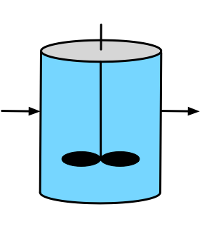
12.1 CSTR Characteristics
As was the case for BSTRs and SBSTRs, one essential characteristic of CSTRs is that the contents are perfectly mixed at all times. While stirred tanks are the most common type of CSTR in commercial facilities, other physical geometries and formats are possible, but their contents must always be perfectly mixed. Stirred tanks are well-suited to liquid phase reactions because a simple impeller can be used to do the mixing. Attaining perfect mixing of gases in large vessels can be more challenging.
The characteristic that differentiates a CSTR from BSTRs and SBSTRs is the continuous flow of fluid into and out of the reactor as the reaction is taking place. This is what allows them to operate continuously. Unlike BSTRs and SBSTRs, there isn’t a need to stop the reaction, and drain and re-fill the reactor. A fresh feed stream enters continuously and a converted product stream leaves continuously.
This results in two possible modes of operation, steady-state and transient. At steady-state, nothing changes over time. The inlet flow rate, temperature, and composition; the outlet flow rate, temperature, and composition; and the heat exchange fluid flow rate, inlet temperature, and outlet temperature are all constant. CSTRs are designed to operate at steady-state. Once a steady state has been reached, the labor demands to operate the reactor are minimal. Integration with other operations in the process such as feed purification, product separation, etc. is easier to implement when the entire process operates at steady-state.
There are times when a CSTR must operate in a transient mode, such as when the process is being started up and when it is being shut down. This type of transient operation is typically planned, for example, the reactor might be shut down periodically so that routine maintenance can be performed. Unexpected events can also initiate transient operation of a CSTR. For example, a sudden change in the coolant flow rate or temperature or a change in the feed flow or temperature will initiate transient operation.
Compared to the other type of ideal continuous reactor, namely the PFR, the most significant feature of a CSTR is the instantaneous mixing of the feed into the reacting fluid. As a consequence of this mixing the temperature and composition of the reacting fluid is constant for the entire time that the fluid is in the reactor at steady-state. Furthermore, the temperature and composition of the reacting fluid are the final or outlet temperature and composition. Depending upon the reaction kinetics, this can be either an advantage or a disadvantage, as described later in this chapter. Generally use of a CSTR can be advantageous when the reaction is exothermic and/or auto-catalytic. It can be disadvantageous when the reaction is endothermic and/or when the reaction kinetics are typical (i.e. higher reactant concentrations result in larger rates).
Being continuous reactors, CSTRs are well-suited to the production of high volumes of product compared to non-continuous reactors. Another advantage of CSTRs is that they can have a wide range of heat transfer area relative to the reacting fluid volume. This is possible because in addition to exchanging heat through the walls of the reactor, a coil through which heat exchange fluid flows can be submerged in the reacting fluid and/or reacting fluid can be rapidly recirculated through an external heat exchanger. (These heat exchange geometries are illustrated for BSTRs in Figure 9.1.)
The requirement that the reacting fluid be perfectly mixed can be a disadvantage. If the reacting fluid has a high viscosity, mixing it thoroughly can be very difficult and can consume a great deal of power. Similarly if the reaction requires a solid catalyst, use of a CSTR is impractical or impossible because “stirring” a tank full of solid particles doesn’t work.
12.2 CSTR Operation
CSTRs are designed to operate at steady-state for extended periods of time. Before that can happen, the reactor must be started up. Start-up is a transient process. There are many, many different ways to start up a CSTR. Three goals of start-up are to bring the reactor to steady-state as quickly as possible, to minimize waste while doing so, and to do it all safely. One option is to fill the reactor with the feed and operate it as a batch reactor until the composition and temperature are close to their intended steady-state values, at which time the feed and product flow can be started.
Occasionally CSTRs must be shut down, too. This may be necessary to perform maintenance on the reactor itself, or it may be necessary because an upstream, downstream, or utility (chilled water, etc.) process needs to be shut down. Again, shut-down is a transient process, and the same guidelines as for start-up apply. It is particularly important to analyze the shut-down process prior to implementing it, especially for exothermic processes. If the wrong procedure is used to shut down a reactor, explosions and other undesired events can ensue.
During steady-state operation, automatic control systems can be used to maintain steady-state processing of the feed. Such control systems can make small adjustments to compensate for minor variations in the reactor inputs. Reactor models like those described in this chapter can be used when designing control systems for a CSTR.
12.3 Qualitative Analysis of Steady-State Reaction in a CSTR
The qualitative analysis of BSTRs was described in Chapter 9. It involves setting the initial temperature and composition and then considering how they would change during small increments of time. In this way the curvature of graphs of temperature, composition, rate, etc over time can be predicted. If the curvature will not lead to equilibrium, events that must occur to cause them to lead to equilibrium can be inferred. In a steady-state CSTR, nothing changes with time, but nonetheless, a very similar approach can be used.
In a CSTR, the time during which the reaction occurs is the amount of time that the fluid remains in the reactor. It is not related to elapsed clock time. For a fixed reactor volume, the slower the volumetric flow through the reactor, the longer the time the fluid spends in the reactor. Recall that the space time is the reacting fluid volume divided by the inlet volumetric flow rate. Thus, the space time is a measure of the time during which reaction takes place. With that understanding, the qualitative analysis of a CSTR is analogous to the qualitative analysis of a BSTR except that small increments of the space time are used in place of small increments in reaction time.
There is one important difference between an increment of reaction time in a BSTR and an increment of space time in a CSTR. Consider the concentration of a reactant in the reactor at some point during processing. When qualitatively analyzing a BSTR, any change in that concentration during the next small increment of reaction time only applies during that increment. When qualitatively analyzing a CSTR, a change in concentration due to a small increment of the space time applies for the entire time when reaction occurs.
Put differently at a given CSTR space time, the reactant concentration is constant for the entire time the fluid spends in the reactor, i. e. for the entire time during which reaction occurs. If the space time is increased incrementally, the fluid will spend slighly more time in the reactor, that allows slightly more reaction to occur, and consequently the reactant concentration will be slightly smaller. The important difference is that the slightly smaller reactant concentration will prevail for the entire time that the fluid spends in the reactor. Because each incremental change of space time applies over the entire reaction time in a CSTR, the changes it causes will generally be greater than those in a BSTR where an incremental change only affects that increment of time and not the entire reaction time.
It is instructive to compare the effects of composition and temperature over the entire time during which reaction occurs in a BSTR and a CSTR. For illustrative purposes consider a first-order reaction in isothermal reactors. In a BSTR, the reaction rate is high initially. Then as the reactant is consumed, the rate decreases over time. In a CSTR oprating at a space time equal to the BSTR reaction time, the concentration of the reactant is at its lowest value for the whole time, so the rate is low the entire time reaction is taking place. As a consequence, the overall conversion in the CSTR will be smaller.
The same effect is seen with temperature, but for an adiabatic, exothermic reaction, this gives an advantage to the CSTR. The temperature will rise over time in the BSTR, but in the CSTR the temperature is at its final, highest value the entire time the reaction is taking place. Assuming Arrhenius temperature dependence of the rate coefficient, that means that the rate coefficient will be larger in the CSTR than at the start of batch processing.
12.4 CSTR Design Equations
The reactor design equations for CSTRs are derived in Appendix E.4 and discussed in Chapter 6.6. The general CSTR mole balance, Equation 6.24, and reacting fluid energy balance, Equation 6.25, are reproduced below along with the energy balances for the heat exchange fluid for the two situations where it exchanges only sensible heat, Equation 6.2, and where it exchanges only latent heat, Equation 6.6. The choice of which equations to use when modeling a particular reactor is also discussed in Chapter 6.6.
\[ \frac{V}{\dot V}\frac{d \dot n_i}{dt} + \frac{\dot n_i}{\dot V}\frac{dV}{dt} - \frac{\dot n_iV}{\dot V^2}\frac{d \dot V}{dt} = \dot n_{i,in} - \dot n_i + V \sum_j \nu_{i,j}r_j \]
\[ \begin{split} \frac{V}{\dot V}\sum_i \left( \dot n_i \hat C_{p,i} \right) &\frac{dT}{dt} - V \frac{dP}{dt} - P\frac{dV}{dt} = \dot Q - \dot W \\&- \sum_i\dot n_{i,in} \int_{T_{in}}^T \hat C_{p,i}dT - V\sum_j r_j \Delta H_j \end{split} \]
\[ \rho_{ex} V_{ex} \tilde C_{p,ex}\frac{dT_{ex}}{dt} = -\dot Q - \dot m_{ex} \int_{T_{ex,in}}^{T_{ex}} \tilde C_{p,ex}dT \]
\[ \frac{\rho_{ex} V_{ex} \Delta H_{\text{latent},ex}^0}{M_{ex}} \frac{d \gamma}{dt} = - \dot Q - \gamma \dot m_{ex} \frac{\Delta H_{\text{latent},ex}^0}{M_{ex}} \]
The transient CSTR design equations are IVODEs. The numerical solution of IVODEs requires initial values for each of the dependent variables. This can lead to confusion when first learning to model transient CSTRs because both initial and inlet variables are used when solving the design equations. The key point to remember is that the dependent variables in the IVODEs are the outlet molar flow rates, temperature and exchange fluid temperature. As a consequence, the initial values that are needed to solve the IVODEs are the initial values of the outlet molar flows and temperatures, not their inlet values.
It is noted in Chapter 6.6 that when a CSTR operates at steady-state, nothing changes over time. consequently the time derivatives in the design equations all equal zero. The corresponding reactor design equations are reproduced below.
\[ 0 = \dot n_{i,in} - \dot n_i + V \sum_j \nu_{i,j}r_j \]
\[ 0 = \dot Q - \dot W - \sum_i\dot n_{i,in} \int_{T_{in}}^T \hat C_{p,i}dT - V\sum_j r_j \Delta H_j \]
\[ 0 = -\dot Q - \dot m_{ex} \int_{T_{ex,in}}^{T_{ex}} \tilde C_{p,ex}dT \]
\[ 0 = - \dot Q - \gamma \dot m_{ex} \frac{\Delta H_{\text{latent},ex}^0}{M_{ex}} \]
It is important to note that the \(V\frac{dP}{dt}\) and \(P\frac{dV}{dt}\) terms in the transient reacting fluid energy balance will have different units than the other terms, as was the case for the BSTR and SBSTR reacting fluid energy balances. As described in Chapter 6.6, the CSTR design equations can be modified and simplified, depending upon the particular CSTR being modeled. For liquid phase reacting fluids, the gravimetric or volumetric heat capacity may be known instead of the molar heat capacities of the individual reagents, in which case the sensible heat terms can be modified.
\[ \frac{V}{\dot V}\sum_i \left( \dot n_i \hat C_{p,i} \right) \frac{dT}{dt}\ \Leftrightarrow\ \rho V \tilde C_p \frac{dT}{dt}\ \Leftrightarrow\ V \breve C_p \frac{dT}{dt} \]
\[ \sum_i \dot n_{i,in} \int_{T_{in}}^T \hat C_{p,i}dT\ \Leftrightarrow\ \rho \dot V_{in} \int_{T_{in}}^T \tilde C_pdT\ \Leftrightarrow\ \dot V_{in} \int_{T_{in}}^T \breve C_pdT \]
The power associated with an agitator that is used to stir a liquid-phase reacting fluid is often negligible, \(\dot{W} = 0\). In most cases involving a gas phase reacting fluid, the pressure and reacting fluid volume in a CSTR are constant, so their time derivatives are equal to zero. For liquids, if the inlet and outlet flow rates are not equal, the reacting fluid volume in a CSTR will change over time as was the case for SBSTRs.
When rate expressions are substituted into the CSTR design equations, they will introduce concentrations or, for gases, partial pressures. Noting that the CSTR is perfectly mixed so that the outlet composition and temperature are the same as that of the reacting fluid, the concentrations or partial pressures in the rate expressions should be expressed in terms of the outlet molar flow rates and temperature.
\[ C_i = \frac{\dot{n}_i}{\dot{V}} \]
\[ C_i = \frac{\dot{n}_i}{\sum_i \left(\dot{n}_i\right)}\frac{P}{RT} \qquad i = \text{ ideal gas} \]
\[ P_i = \frac{\dot{n}_i}{\sum_i \left(\dot{n}_i\right)}P \qquad i = \text{ ideal gas} \]
12.5 Steady-State Multiplicity
Upon substitution of rate expressions, the steady-state CSTR design equations are non-linear because the rate expression contains an exponential term and may also contain terms other than concentrations raised to the first power. Non-linear equations can have more than one solutions. For example, a quadratic equation has two solutions. Therefore it is possible for there to be more than one solution of the steady-state CSTR design equations.
Sometimes when model equations have two or more soltuions, only one of them is phycially meaningful, and the others can be ignored. This is not the case when the steady-state CSTR reactor design equations have multiple solutions. As an example, Example 12.7.4 describes an adiabatic, steady-state CSTR and shows that the reactor design equations have three solutions. Furthermore, each of the three solutions is physically feasible.
Figure 12.2 shows the outlet temperature of the adiabatic, steady-state CSTR described in Example 12.7.4 calculated as a function of inlet temperature. The figure shows that between the two vertical red lines, the temperature curve doubles back above itself twice leading to an “S” shape. Clearly, at any inlet temperature between the two red lines, there are three steady-state outlet temperatures. (The three compositions corresponding to those steady-states are also different from each other, see Example 12.7.4.)
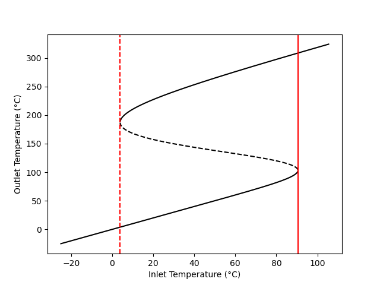
If a vertical line is drawn at any inlet temperature between the red lines in Figure 12.2, it will cross the curve three times. The points where a vertical line crosses are the three steady-state outlet temperatures for that inlet temperature. This phenomenon is known as steady-state multiplicity. Other features of Figure 12.2 will be discussed below; the important point here is that the steady-state CSTR design equations can have multiple solutions that are physically feasible.
It is worth noting that while some of the inlet temperatures result in multiple outlet temperatures, there is only one inlet temperature that coresponds to each outlet temperature. That is, if a horizontal line is drawn at any outlet temperature, it will cross the curve only one time.
One might wonder, then, if the inlet temperature to the actual reactor corresponding to Figure 12.2 is set to say 60 °C, which of the three outlet temperatures shown in the figure will actually be observed? The answer to this question is that the transient procedure used to start up the reactor and bring its inlet temperature to 60 °C will determine which of the steady states is actually observed.
12.6 Steady-State Stability and Sensitivity
Within the range of inlet temperatures where multiple steady states are possible, Figure 12.2 shows the upper and lower outlet temperatures as solid lines, but it shows the intermediate outlet temperature as a dashed line. The significance of the dashed line is that the steady states with the intermediate outlet temperature are unstable.
12.6.1 Stability of Steady States
If the steady-state, adiabatic CSTR corresponding to Figure 12.2 was somehow operating at an outlet temperature on the dashed portion of the curve, the steady state would be unstable. A slight perturbation of any reactor property would initiate a period of transient operation, and at the end of that transient period, the reactor would be at either the high steady-state outlet temperature or at the low steady state temperature. That is, if a CSTR somehow operates at an unstable steady state, it will not return to that unstable steady state following even a small perturbation away from it.
Example 12.7.6 presents a rigorous analysis of such a perturbation. However, a non-rigorous analysis may provide insight and understanding as to why the middle-temperature steady state is unstable. It involves a very roundabout way of solving the steady-state CSTR design equations, and can be illustrated by reference to Example 12.7.4.
The reacting fluid energy balance in Example 12.7.4, reproduced below, consists of two terms. One term represents sensible heat absorbed by the feed as it enters the reactor, Equation 12.1 and the other represents the heat generated by the reaction, Equation 12.2. Clearly, the reacting fluid energy balance is only satisfied if the two terms are equal, Equation 12.3.
\[ 0 = -\dot{V}_{in} \rho \tilde{C}_p \left( T - T_{in}\right) - Vr_1 \Delta H_1 = \epsilon_5 \]
\[ \dot{Q}_{abs} = \dot{V}_{in} \rho \tilde{C}_p \left( T - T_{in}\right) \tag{12.1}\]
\[ \dot{Q}_{gen} = - Vr_1 \Delta H_1 \tag{12.2}\]
\[ \dot{Q}_{abs} = \dot{Q}_{gen} \tag{12.3}\]
A very roundabout way of solving the full set of steady-state CSTR design equation begins by choosing a range of values for the reactor outlet temperature. Knowing the outlet temperature, the mole balance design equations can be solved to find all of the outlet molar flow rates corresponding to each outlet temperature. Knowing the inlet and outlet molar flow rates and the inlet temperature, \(\dot{Q}_{abs}\) and \(\dot{Q}_{gen}\) can be calculated for each outlet temperature in the chosen range using Equation 12.1 and Equation 12.2. Finally \(\dot{Q}_{abs}\) and \(\dot{Q}_{gen}\) can each be plotted vs. the outlet temperatures on a single graph. The reacting energy balance is satisfied when the two curves cross, Equation 12.3, so the steady-state temperatures corresponding to the points where the curves cross can be read from the graph.
That roundabout way of solving the design equations was applied to Example 12.7.4. The resulting heat generated and heat absorbed curves are shown in Figure 12.3. The curves cross three times corresponding to the three steady states. In the figure the three steady states are labeled “low”, “middle,” and “high.”
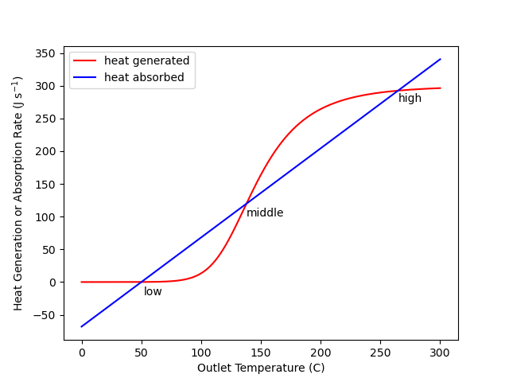
Suppose a CSTR was operating at the low temperature steady state and somehow the temperature was increased very slightly. That is, on the graph, suppose the operating point shifted slightly to the right of the intersection labeled low. At that new point the heat absorption (blue) would be greater than the heat generation (red), causing the operating temperature to decrease (i. e. to shift back toward the low point).
Similarly, if the CSTR was operating at the low steady state and somehow the temperature was decreased (shifted left) slightly, heat generation (red) would be greater than heat absorption (blue), causing the temperature to increase (i. e. to again shift back toward the low point). This argument suggests that the low temperature steady state is stable because following a small perturbation away from it, the system returns back to it. The exact same argument can be applied to the high temperature steady state. Following any small perturbation from it, the system returns to it.
Now consider the middle temperature steady state. If somehow the operating temperature is increased very slightly (i. e. shifted to the right), the heat generation will be greater than the heat absorption. This will cause the temperature to rise. That is, the point will move even farther to the right. In fact, it will continue to move to the right until it reaches the high temperature steady state.
If somehow the temperature of a CSTR operating at the middle temperature steady state is decreased very slightly (i. e. shifted slightly to the left), the heat absorbed will exceed the heat generated and the temperature will decrease. That is, the point will move farther to the left. This will continue until the point reaches the low temperature steady state.
These arguments are not rigorous because the curves in Figure 12.3 only apply at steady state, and once the system is perturbed, it is operating in transient mode. Nonetheless, the conclusions drawn are correct (see Example 12.7.6 for a rigorous confirmation.) The middle steady state is unstable. Any perturbation to a reactor operating at the middle steady state will initiate a transient that ends at one of the two stable steady states.
There is another possible result of perturbing a steady-state reactor. The reactor could go into a state of sustained, periodic oscillations. This possibility is not considered in Reaction Engineering Basics. The topic of steady state stability is often considered in detail in more advanced reaction engineering books and courses.
12.6.2 Parametric Sensitivity of CSTRs
For reasons just described, real CSTRs do not operate at unstable steady states. This leads to one type of parametric sensitivity known as hysteresis. Figure 12.4 shows only the stable steady states from Figure 12.2. Consider a CSTR operating at steady state with an inlet temperature of -20 °C, where only one steady state is possible. If the inlet temperature is very slowly increased in a way that the reactor remains at steady-state, the outlet temperature will slowly rise along the lower black curve in the figure until it reaches the solid red line.
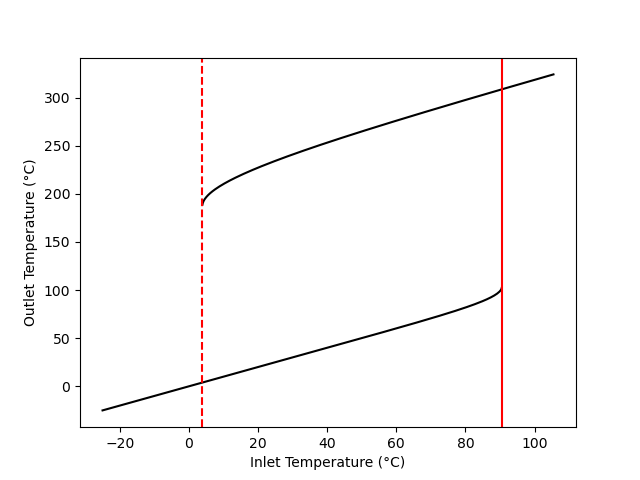
The point where the temperature just reaches the solid red line is called the ignition point. A slight increase in the temperature beyond the ignition point causes the reactor to rapidly “jump” to the upper curve. That is, if the temperature is raised just slightly above the ignition point, the temperature jumps from ca. 100 °C to over 300 °C. This is clearly undesirable and unsafe.
If the CSTR was operating at an inlet temperature of 100 °C (outlet temperature ~320 °C) and the feed temperature was very slowly decreased so that the reactor remained at steady state, it would follow the upper black curve in the figure until it reached the dashed red line. The point where the temperature just reaches the dashed red line is called the extinction point. Lowering the temperature just slightly below the extinction point would cause the reactor temperature to drop to the lower black curve. That is, the reaction rate would suddenly become very small.
Ignition and extinction are demonstrated quantitatively in Example 12.7.6. The area bounded on the sides by the red lines and on top and bottom by the black lines is known as a hysteresis loop. As the temperature is slowly raised, the system follows the lower black curve until it reached the solid red line, where upon it jumps to the upper black curve. Upon cooling, the system traces the upper black curve until it reaches the dashed red line at which point it jumps to the lower black curve.
Ignition and extinction are one type of parametric sensitivity. More generally, when a small change in a reactor operating parameter results in an extreme change in the output, the reactor is said to be parametrically sensitive to the parameter being changed. Identifying and avoiding operation at conditions near points of parametric sensitivity is essential for the safe operation of CSTRs.
Other types of parametric sensitivity and methods for identifying them are typically presented in more advanced books and courses on reaction engineering. They have been introduced here so that readers are aware of the phenomenon.
12.7 Examples
The first four examples in this section involve steady-state CSTRs. Example 12.7.1 and Example 12.7.2 illustrate steady-state CSTR response tasks. The former involves two liquid-phase reactions while the second involves a gas phase reaction. In Example 12.7.1 the assignment is to calculate the reactor output, while in Example 12.7.2 the assignment is to calculate the input needed to achieve a specified output. Example 12.7.3 presents the solution of an optimization task involving a steady-state CSTR. Example 12.7.4 features a steady-state CSTR where three steady states are possible. Start-up of a CSTR, a transient process, is analyzed in Example 12.7.5. Finally, Example 12.7.6 follows three transients that result when an operating parameter of a steady-state CSTR is perturbed. In the first analysis the CSTR is operating at an unstable steady state, and when it is perturbed, the transient ends when it reaches a different, stable steady state. The other two analyses illustrate ignition and extinction.
12.7.1 Response of a Steady-State CSTR
Reactants A and B can react irreversibly to produce either a desired product, D, or an undesired product, U, as shown in equations (1) and (2). The corresponding rate expressions are given in equations (3) and (4). The pre-exponential factors for \(k_1\) and \(k_2\) are 10.2 gal mol-1 min-1 and 17.0 gal mol-1 min-1, respectively, and the activation energies are 15.3 kJ mol-1 and 23.7 kJ mol-1, respectively. A liquid mixture containing 10 mol A gal-1 and 12 mol B gal-1 at 350 K is fed to an adiabatic 25 gal CSTR at a rate of 12.5 gal min-1. If the standard heats at 298 K of reactions (1) and (2) are -12.0 and -21.3 kJ mol-1, respectively, and if the reagents form an ideal liquid mixture with the temperature-independent heat capacities of A, B, D and U equal to 85, 125, 200 and 170 J mol-1 K-1, what are the conversion of the limiting reagent, the outlet selectivity (in mol D per mol U) and the outlet temperature?
\[ A + B \rightarrow D \tag{1} \]
\[ A + B \rightarrow U \tag{2} \]
\[ r_1 = k_1 C_AC_B \tag{3} \]
\[ r_2 = k_2 C_AC_B \tag{4} \]
Click Here to See What an Expert Might be Thinking at this Point
This assignment describes a single CSTR and how it operates. No other equipment is mentioned, so this assignment involves analysis of an isolated ideal CSTR. To sumarize the assignment, I’ll assign appropriate variable names to each of the quantities provided in the narrative, using a subscripted “in” to denote properties associated with the feed to the reactor. I know that I’ll need the gas constant, so I’ll add that, too.
12.7.1.1 Assignment Summary
Given and Known Constants: \(k_{0,1}\) = 10.2 gal mol-1 min-1, \(k_{0,2}\) = 17.0 gal mol-1 min-1, \(E_1\) = 15.3 kJ mol-1, \(E_2\) = 23.7 kJ mol-1, \(C_{A,in}\) = 10 mol gal-1, \(C_{B,in}\) = 12 mol gal-1, \(T_{in}\) = 350 K, \(V\) = 25 gal, \(\dot{V}_{in}\) = 12.5 gal min-1, \(\Delta H_1 \big\vert_{298 \text{ K}}\) = –12.0 kJ mol-1, \(\Delta H_2 \big\vert_{298 \text{ K}}\) = –21.3 kJ mol-1, \(\hat{C}_{p,A}\) = 85 J mol-1 K-1, \(\hat{C}_{p,B}\) = 125 J mol-1 K-1, \(\hat{C}_{p,D}\) = 200 J mol-1 K-1, \(\hat{C}_{p,U}\) = 170 J mol-1 K-1, and \(R\) = 8.314 J mol-1 K-1.
Reactor System: Adiabatic, steady-state CSTR
Quantities of Interest: \(f_A\), \(S_{D/U}\), and \(T\)
12.7.1.2 Mathematical Formulation of the Solution
Click Here to See What an Expert Might be Thinking at this Point
Reactor design equations are always needed when modeling a reactor, and the design equations must always include a sufficient number of mole balances. I’ll simply write a mole balance for every reagent. Here the reactor operates at steady-state, so the general mole balance is given by Equation 6.31. Two reactions are taking place, so the summation expands to two terms. Only A and B are flowing into the reactor, so \(\dot{n}_{D,in}\) and \(\dot{n}_{U,in}\) are equal to zero.
\[ 0 = \dot n_{i,in} - \dot n_i + \cancelto{V\left(\nu_{i,1}r_1 + \nu_{i,2}r_2\right)}{V \sum_j \nu_{i,j}r_j} \]
The reactor is not isothermal, so an energy balance must also be included among the reactor design equations. For a steady-state CSTR the general energy balance is given by Equation 6.32. This reactor is adiabatic, so the rate of heat transfer is equal to zero. There are no shafts or moving boundaries that are doing work, so the rate of doing work is also equal to zero. Only A and B flow into the reactor, so the sum over the reagents reduces to two terms. Also, since the heat capacities are constant, the integral can be evaluated. Finally, there are two reactions taking place, so the final sum expands to two terms.
\[ 0 = \cancelto{0}{\dot Q} - \cancelto{0}{\dot W} - \cancelto{\left(\dot{n}_{A,in}\hat{C}_{p,A} + \dot{n}_{B,in}\hat{C}_{p,B}\right)\left(T - T_{in}\right)}{\sum_i\dot n_{i,in} \int_{T_{in}}^T \hat C_{p,i}dT} - \cancelto{V\left(r_1 \Delta H_1 + r_2 \Delta H_2\right)}{V\sum_j r_j \Delta H_j} \]
This reactor is adiabatic, so there isn’t a heat exchange fluid to write an energy balance for.
Reactor Design Equations
Mole balance design equations for A, B, D, and U are presented in equations (5) through (8), and an energy balance on the reacting fluid is given in equation (9), all in the form of residual expressions. These equations can be solved to find the outlet molar flow rates and temperature, \(\dot{n}_A\), \(\dot{n}_B\), \(\dot{n}_D\), \(\dot{n}_U\), and \(T\).
\[ 0 = \dot n_{A,in} - \dot n_A + V \left( -r_1 - r_2\right) = \epsilon_1 \tag{5} \]
\[ 0 = \dot n_{B,in} - \dot n_B + V \left( -r_1 - r_2\right) = \epsilon_2 \tag{6} \]
\[ 0 = - \dot n_D + V r_1 = \epsilon_3 \tag{7} \]
\[ 0 = - \dot n_U + V r_2 = \epsilon_4 \tag{8} \]
\[ 0 = -\left( \dot{n}_{A,in}\hat C_{p,A} + \dot{n}_{B,in}\hat C_{p,B}\right) \left(T - T_{in}\right) - V\left( r_1 \Delta H_1 + r_2 \Delta H_2\right) = \epsilon_5 \tag{9} \]
Click Here to See What an Expert Might be Thinking at this Point
In this assignment reactor design equations will be solved for the unknown outlat molar flow rates and temperature. In order to solve the ATEs numerically I’ll need to do two things: calculate the values of the residuals for each guess and provide an initial guess.
Starting with evaluating the residuals, I’ll need to evaluate them each time a new guess for the solution is generated. At that point, values for each of the unknowns (\(\dot{n}_A\), \(\dot{n}_B\), \(\dot{n}_D\), \(\dot{n}_U\), and \(T\)) will be available along with the given and known constants. I will need to calculate any other quantities that appear in the residuals expressions. Examination of equations (5) through (9) shows that I’ll need to write equations for calculating the inlet molar flow rates of A and B, the reaction rates, and the heats of reaction. (Note that the assignment narrative provided the standard heats of reaction at 298K, but it did not indicate that the heats were constant with temperature.)
The volumetric feed rate and the feed concentrations of A and B are given. The inlet molar flow rates of A and B can be found using the defining equation for concentration in a flow system.
\[ C_{i,in} = \frac{\dot{n}_{i,in}}{\dot{V}_{in}} \qquad \Rightarrow \qquad \dot{n}_{i,in} = C_{i,in}\dot{V}_{in} \]
The reaction rates can be calculated using the rate expressions, equations (3) and (4), but that introduces the rate coefficients and outlet concentrations of A and B which must be calculated. The rate coefficients can be calculated using the Arrhenius expression , Equation 4.8.
\[ k_j = k_{0,j} \exp{\left( \frac{-E_j}{RT} \right)} \]
The outlet concentrations can be calculated using their definitions. The reacting fluid here is an ideal liquid, and is assumed to be incompressible, so the inlet and outlet volumetric flow rates will be equal.
\[ C_{i} = \frac{\dot{n}_i}{\dot{V}} = \frac{\dot{n}_i}{\dot{V}_{in}} \]
Finally, the heats of reaction can be calculated using Equation C.3. Here, the heat capacities are constant, so they can be taken outside of the integrals and the integrals can be evaluated.
\[ \Delta H_j^0 = \Delta H_j^0\Bigr\rvert_{T=298K} + \cancelto{\left(\sum_i \nu_{i,j}\hat{C}_{p,i}\right)\left(T - 298\text{ K}\right)}{\sum_i \left( \nu_{i,j} \int_{298\text{ K}}^T \hat C_{p,i}dT \right)} \]
Ancillary Equations for Evaluating the Residuals
\[ \dot n_{A,in} = \dot C_{A,in} \dot{V}_{in} \tag{10} \]
\[ \dot n_{B,in} = \dot C_{B,in} \dot{V}_{in} \tag{11} \]
\[ k_1 = k_{0,1} \exp{\left(\frac{-E_1}{RT}\right)}\tag{12} \]
\[ k_2 = k_{0,2} \exp{\left(\frac{-E_2}{RT}\right)}\tag{13} \]
\[ C_A = \frac{\dot{n}_A}{\dot{V}_{in}}\tag{14} \]
\[ C_B = \frac{\dot{n}_B}{\dot{V}_{in}}\tag{15} \]
\[ \Delta H_1 = \Delta H_1 \big\vert_{298 \text{ K}} + \left( \hat{C}_{p,D} - \hat{C}_{p,A} - \hat{C}_{p,B} \right)\left(T - 298\right) \tag{16} \]
\[ \Delta H_2 = \Delta H_2 \big\vert_{298 \text{ K}} + \left( \hat{C}_{p,U} - \hat{C}_{p,A} - \hat{C}_{p,B} \right)\left(T - 298\right) \tag{17} \]
Click Here to See What an Expert Might be Thinking at this Point
When I solve the ATEs numerically, I’ll also need to provide an initial guess for the solution. I have no idea what the outlet molar flow rates or the outlet temperature will equal. To start, I’ll simply guess that half of the A remains along with an equal amount of B, and that the amounts of D and U are one-tenth the initial amount of A. (These are just guesses; they don’t need to be stoichiometrically consistent.) I expect that the temperature will have the greatest effect with respect to the ATE solver converging, so I’ll just guess that the temperature increases by only 10 K. If the ATE solver does fail to converge, I’ll have to revise these guesses.
At this point, the reactor design equations can be solved numerically to find the unknowns, \(\dot{n}_A\), \(\dot{n}_B\), \(\dot{n}_D\), \(\dot{n}_U\), and \(T\). In addition to the outlet temperature, the conversion of the limiting reagent and the selectivity for D over U are of interest in this assignment.
The inlet concentration of A is smaller than that of B, so A is the limiting reagent. Its conversion can be calculated using the defining equation for conversion in a flow system. The calculation of the selectivity is straightforward.
Ancillary Equations for Calculating the Quantities of Interest
Solving the reactor design equations yields \(\dot{n}_A\), \(\dot{n}_B\), \(\dot{n}_D\), \(\dot{n}_U\), and \(T\). The conversion of A and the selectivity for D over U can be calculated using equations (18) and (19).
\[ f_A = \frac{\dot{n}_{A,in} - \dot{n}_A}{\dot{n}_{A,in}} \tag{18} \]
\[ S_{D/U} = \frac{\dot{n}_D}{\dot{n}_U} \tag{19} \]
Calculations Summary
- Substitute given and known constants into all equations.
- When it is necessary to evaluate the residuals
- \(\dot{n}_A\), \(\dot{n}_B\), \(\dot{n}_D\), \(\dot{n}_U\), and \(T\) will be available.
- calculate \(\dot{n}_{A,in}\), \(\dot{n}_{A,in}\), \(k_1\), \(k_2\), \(C_A\), \(C_B\), \(\Delta H_1\), and \(\Delta H_2\) using equations (10) through (17).
- calculate \(r_1\) and \(r_2\) using equations (3) and (4).
- calculate \(\epsilon_1\), \(\epsilon_2\), \(\epsilon_3\), \(\epsilon_4\), \(\epsilon_5\) using equations (5) through (9).
- When it is necessary to calculate the quantities of interest, \(f_A\) and \(S_{D/U}\)
- \(\dot{n}_A\), \(\dot{n}_B\), \(\dot{n}_D\), \(\dot{n}_U\), and \(T\) will be available.
- calculate \(f_A\) and \(S_{D/U}\) using equations (18) and (19)
12.7.1.3 Numerical implementation of the Solution
- Make the given and known constants available for use in all functions.
- Write a residuals function that
- receives guess values for \(\dot{n}_A\), \(\dot{n}_B\), \(\dot{n}_D\), \(\dot{n}_U\), and \(T\),
- evaluates the residuals as described in step 2 of the calculations summary, and
- returns the values of the residuals.
- Write a reactor model function that
- receives, as an argument, an initial guess for the unknowns, \(\dot{n}_A\), \(\dot{n}_B\), \(\dot{n}_D\), \(\dot{n}_U\), and \(T\),
- gets a solution for the ATEs by calling an ATE solver and passing the following information to it
- the initial guess and
- the name of the residuals function from step 2 above, d, checks that the solver converged, and
- returns the values returned by the ATE solver.
- Perform the analysis by
- setting an initial guess for the unknowns
- getting \(\dot{n}_A\), \(\dot{n}_B\), \(\dot{n}_D\), \(\dot{n}_U\), and \(T\) by calling the reactor model function from step 3 above with the initial guess as the argument,
- calculating the quantities of interest as described in step 3 of the calculations summary, and
- displaying the results.
12.7.1.4 Results and Discussion
The calculations were performed as described above. The conversion of A is 54.9 %, the selectivity is 8.39 mol D per mol U, and the outlet temperature is 383 K.
The instantaneous selectivity is defined in Equation 4.5. Applying that definition to this system yields equation (20). According to that equation, the only way to increase the selectivity is to increase \(k_1\) or decrease \(k_2\). The only way to change the rate coefficients is by changing the temperature, but changing the temperature will change both rate coefficients.
\[ S_{D/U} = \frac{r_D}{r_U} = \frac{k_1 C_AC_B}{k_2 C_AC_B} = \frac{k_1}{k_2} = \frac{k_{0,1} \exp{\left(\frac{-E_1}{RT}\right)}}{k_{0,2} \exp{\left(\frac{-E_2}{RT}\right)}} \tag{20} \]
The activation energy for reaction (2) is larger than that for reaction (1), so increasing the temperature will increase \(k_2\) more than \(k_1\), resulting in a lower selectivity for D over U. Thus, the selectivity for D over U can be increased by decreasing the temperature. However, if everything else remains fixed, decreasing the temperature will decrease the conversion. That is, decreasing the temperature will increase the selectivity but decrease the conversion while increasing the temperature will decrease the selectivity but increase the conversion.
To verify this prediction, the feed temperature was decreased to 325 K and the calculations were repeated. The selectivity did indeed increase to 10.6 mol D per mol U, and the conversion decreased to 46.7 %. Increasing the temperature to 375 K gives a selectivity of 6.9 mol D per mol U and a conversion of 61.5 %.
Note
When completing reaction engineering assignments involving CSTSs, it is important to be able to determine whether the reactor is transient or at steady-state. If the assignment describes start-up or shut-down or mentions that some parameter was perturbed or suddenly changed, the reactor will be transient. Basically, transient operation occurs following some change to the way the reactor operates.
One situation that can cause confusion when first studying CSTRs is when an assignments asks how a reactor output changes as a reactor input varies. This type of assignment must be read carefully. In many cases the assignment is asking how the steady-state output changes as the steady-state input varies. If the assignment is to calculate the transient change of the output, then the assignment must specify how the input changes. That is it would need to something like “show how the outlet concentration changes if the feed temperature changes by 5 °C min-1,” and not just “show how the outlet concentration changes as the feed temperature is varied.”
12.7.2 Gas Phase Reaction in an Adiabatic, Steady-State CSTR
The amount of A, (10%), in a gas mixture with B (65%), and inert, I, (25%) at 165 °C and 5 atm needs to be reduced to 0.1%. This is going to be accomplished by converting the A into Z according to reaction (1). An adiabatic, steady-state CSTR is going to be used. The rate expression is given in equation (2) where the pre-exponential factor is 1.37 x 105 m3 mol-1 min-1 and the activation energy is 11,100 cal mol-1. The heat of reaction is constant and equal to -7200 cal mol-1, and the heat capacities of A, B, I, and Z are equal to 7.6, 8.2, 4.3, and 13.8 cal mol-1 K-1, respectively. What space time is required, and what temperature will result?
\[ A + B \rightarrow Z \tag{1} \]
\[ r_1 = k_1C_AC_B \tag{2} \]
Click Here to See What an Expert Might be Thinking at this Point
This assignment involves an isolated CSTR that operates at steady-state. To summarize the assignment, I’ll assign an appropriate variable symbol to each quantity provided in the assignment narrative. This is a gas phase system, so I’ll add values of the ideal gas law in both energy and pressure-volume units. I’ll use a subscripted “in” to designate inlet quantities, and I won’t use an extra subscript for outlet quantities.
12.7.2.1 Assignment Summary
Given and Known Constants: \(y_{A,in}\) = 0.1, \(y_{Bin}\) = 0.65, \(y_{I,in}\) = 0.25, \(T_{in}\) = 165 °C, \(P\) = 5 atm, \(y_A\) = 0.001, \(k_{0,1}\) = 1.37 x 105 m3 mol-1 min-1, \(E_1\) = 11,100 cal mol-1, \(\Delta H_1\) = –7200 cal mol-1, \(\hat{C}_{p,A}\) = 7.6 cal mol-1 K-1, \(\hat{C}_{p,B}\) = 8.2 cal mol-1 K-1, \(\hat{C}_{p,I}\) = 4.3 cal mol-1 K-1, and \(\hat{C}_{p,Z}\) = 13.8 cal mol-1 K-1, and \(R\) = 1.987 cal mol-1 K-1 = 8.206 x 10-5 m3 atm mol-1 K-1.
Reactor System: Adiabatic, steady-state CSTR
Quantities of Interest: \(\tau\) and \(T\)
12.7.2.2 Mathematical Formulation of the Solution
Click Here to See What an Expert Might be Thinking at this Point
I need to generate the reactor design equations. This reactor operates at steady-state and is adiabatic. The reactor design equations always include at least one mole balance. I’ll simply write a mole balance for every reagent. The general form of the steady-state CSTR mole balance design equation is given in Equation 6.31. In this assignment there is only one reaction, so the summation reduces to a single term. There isn’t any Z in the feed, so \(\dot{n}_{Z,in}\) is equal to zero.
\[ 0 = \dot n_{i,in} - \dot n_i + V \cancelto{\nu_{i,1}r_1}{\sum_j \nu_{i,j}r_j} \]
The reactor isn’t isothermal, so I can’t solve the mole balances independently of an energy balance on the reacting fluid. The general form of the steady-state energy balance is given in Equation 6.32. This reactor is adiabatic, so the rate of heat exchange, \(\dot{Q}\), is zero. There aren’t any shafts or moving boundaries doing work, so assuming the energy associated with mixing the gases is negligible, the power term, \(\dot{W}\), is also equal to zero. The heat capacities are constants, so they can be taken outside of the integral, making it trivial to evaluate the integral. Finally, there is only one reaction taking place, so the final summation reduces to a single term.
\[ 0 = \cancelto{0}{\dot Q} - \cancelto{0}{\dot W} - \sum_i\dot n_{i,in} \int_{T_{in}}^T \hat C_{p,i}dT - V\sum_j r_j \Delta H_j \]
\[ 0 = -\left(\dot{n}_{A,in}\hat{C}_{p,A} + \dot{n}_{B,in}\hat{C}_{p,B} + \dot{n}_{I,in}\hat{C}_{p,I} \right)\left(T - T_{in}\right) - Vr_1 \Delta H_1 \]
There isn’t a heat exchange fluid, so a heat exchange fluid energy balance is not needed. The design equations as written here are already in the form of residual expressions, so they are ready for numerical solution.
Reactor Design Equations
Residual expressions corresponding to mole balance design equations for A, B, I, and Z are presented in equations (3) - (6). The energy balance on the reacting gas is given as a residual expression in equation (7).
\[ 0 = \dot n_{A,in} - \dot n_A - Vr_1 = \epsilon_1 \tag{3} \]
\[ 0 = \dot n_{B,in} - \dot n_B - Vr_1 = \epsilon_2 \tag{4} \]
\[ 0 = \dot n_{I,in} - \dot n_I = \epsilon_3 \tag{5} \]
\[ 0 = - \dot n_Z + Vr_1 = \epsilon_4 \tag{6} \]
\[ 0 = -\left(\dot{n}_{A,in}\hat{C}_{p,A} + \dot{n}_{B,in}\hat{C}_{p,B} + \dot{n}_{I,in}\hat{C}_{p,I} \right)\left(T - T_{in}\right) - Vr_1 \Delta H_1 = \epsilon_5 \tag{7} \]
Click Here to See What an Expert Might be Thinking at this Point
At this point I have five reactor design equations, so I can solve them to find five unknown quantities. Usually I solve for the outlet molar flow rates and the outlet temperature, but in this assignment I’m given the outlet mole fraction of A. That means that I can calculate the outlet molar flow of A using its outlet mole fraction. Also, the assignment is to find the space time, but the space time doesn’t appear in the design equations. However, the volume does appear in the design equations, it is unknown, and it is related to the space time. So I’ll solve the five reactor design equations for \(V\), \(\dot{n}_B\), \(\dot{n}_I\), \(\dot{n}_Z\), and \(T\), and then, knowing \(V\), I’ll calculate the space time using Equation 6.1.
\[ \tau = \frac{V}{\dot V_{in}} \]
To do that, I’ll need to know the inlet volumetric flow rate, but the inlet volumetric flow rate isn’t given in the assignment. Looking more carefully at the assignment summary, I see that all of the given and known quantities are intensive. That is, they do not establish the size of the system. In that situation I am free to choose the value of one extensive quantity as a basis for my calculations. I’ll use an inlet volumetric flow rate of 1 m3 min-1 as my basis. That way I’ll be able to calculate the space time after solving the design equations for \(V\), \(\dot{n}_B\), \(\dot{n}_I\), \(\dot{n}_Z\), and \(T\).
In order to solve the ATEs numerically I’ll need to do two things: calculate the values of the residuals for each guess and provide an initial guess. I’ll need to evaluate the residuals each time a new guess for the solution is generated. At that point, values for each of the unknowns (\(V\), \(\dot{n}_B\), \(\dot{n}_I\), \(\dot{n}_Z\), and \(T\)) will be available along with the given and known constants. I will need to calculate any other quantities that appear in the residual expressions. Looking at equations (3) through (7) I see that for this assignment I’ll need to calculate the inlet molar flow rates, \(\dot{n}_{i,in}\), the outlet molar flow rate of A, \(\dot{n}_A\), and the rate, \(r_1\).
Having chosen an inlet volumetric flow rate, I can use the ideal gas law to calculate the inlet molar flow rates. The inlet mole fractions of A, B, and I sum to 1, so the inlet mole fraction of Z must equal zero.
\[ \dot{n}_{i,in} = y_{i,in}\frac{P\dot{V}_{in}}{RT} \]
The outlet molar flow rate of A can be calculated using its known outlet mole fraction.
\[ y_A = \frac{\dot{n}_A}{\dot{n}_A + \dot{n}_B + \dot{n}_I + \dot{n}_Z} \qquad \Rightarrow \qquad \dot{n}_A = \frac{\left(\dot{n}_B + \dot{n}_I + \dot{n}_Z\right)y_A}{1-y_A} \]
The rate can be calculated using equaion (2), but to do that I must calculate the rate coefficient and the outlet concentrations of A and B. The former can be accomplished using the outlet temperature in the Arrhenius expression, Equation 4.8. For the outlet concentrations I can again use the ideal gas law.
\[ k_j = k_{0,j} \exp{\left( \frac{-E_j}{RT_{in}} \right)} \]
\[ C_i = \frac{\dot{n}_i}{\dot{V}} = \frac{\dot{n}_i}{\sum_i\dot{n}_i}\frac{P}{RT} \]
Ancillary Equations for Evaluating the Residuals
\[ \dot{V}_{in} = 1 \text{ m}^3 \text{ min}^{-1} \left(\text{basis}\right) \tag{8} \]
\[ \dot{n}_{A,in} = y_{A,in}\frac{P\dot{V}_{in}}{RT_{in}} \tag{9} \]
\[ \dot{n}_{B,in} = y_{B,in}\frac{P\dot{V}_{in}}{RT_{in}} \tag{10} \]
\[ \dot{n}_{I,in} = y_{I,in}\frac{P\dot{V}_{in}}{RT_{in}} \tag{11} \]
\[ \dot{n}_A = \frac{\left(\dot{n}_B + \dot{n}_I + \dot{n}_Z\right)y_A}{1-y_A} \tag{12} \]
\[ k_1 = k_{0,1}\exp{\left(\frac{-E_1}{RT}\right)} \tag{13} \]
\[ C_A = \frac{\dot{n}_A}{\dot{n}_A + \dot{n}_B + \dot{n}_I + \dot{n}_Z}\frac{P}{RT} \tag{14} \]
\[ C_B = \frac{\dot{n}_B}{\dot{n}_A + \dot{n}_B + \dot{n}_I + \dot{n}_Z}\frac{P}{RT} \tag{15} \]
Click Here to See What an Expert Might be Thinking at this Point
When I solve the ATEs numerically, I’ll also need to provide an initial guess for the solution. I’ll just guess that the volume is 1 m3. I know that the molar flow rate of B will decrease and that of Z will increase, but I don’t know by how much. The reaction is exothermic and the reactor is adiabatic, so I know the temperature will increase, but again I don’t know by how much. I’ll start with small guesses for the changes. If the ATE solver doesn’t converge (and I can’t find any typos or other errors in my computer code), I’ll try changing the guesses until it does.
When it does converge, the outlet molar flow rates and temperature, \(V\), \(\dot{n}_B\), \(\dot{n}_I\), \(\dot{n}_Z\), and \(T\) will be known. \(T\) is one of the quantities of interest. The other is the space time which can be calculated using its defining equation.
Ancillary Equations for Calculating the Quantities of Interest
Solving the reactor design equations yields \(V\), \(\dot{n}_B\), \(\dot{n}_I\), \(\dot{n}_Z\), and \(T\). The space time can be calculated using equation (15).
\[ \tau = \frac{V}{\dot V_{in}} \tag{16} \]
Calculations Summary
- Substitute the basis, equation (8), given and known constants into all equations.
- When it is necessary to evaluate the residuals
- \(V\), \(\dot{n}_B\), \(\dot{n}_I\), \(\dot{n}_Z\), and \(T\) will be available.
- calculate \(\dot{n}_{A,in}\), \(\dot{n}_A\), \(\dot{n}_{B,in}\), \(\dot{n}_{I,in}\), \(k_1\), \(C_A\) and \(C_B\) using equations (9) through (15)
- calculate \(r_1\) using equation (2)
- evaluate the residuals, \(\epsilon_1\) through \(\epsilon_5\) using equations (3) through (7)
- When it is necessary to calculate the quantities of interest, \(\tau\) and \(T\),
- \(V\), \(\dot{n}_B\), \(\dot{n}_I\), \(\dot{n}_Z\), and \(T\) will be available.
- calculate \(\tau\) using equation (16).
12.7.2.3 Numerical implementation of the Solution
- Make the given and known constants and the chosen basis available for use in all functions.
- Write a residuals function that
- receives guess values for \(V\), \(\dot{n}_B\), \(\dot{n}_I\), \(\dot{n}_Z\), and \(T\),
- evaluates the residuals as described in step 2 of the calculations summary, and
- returns the values of the residuals.
- Write a reactor model function that
- receives an initial guess for the unknowns, \(V\), \(\dot{n}_B\), \(\dot{n}_I\), \(\dot{n}_Z\), and \(T\),
- gets a solution of the ATEs by calling an ATE solver and passing the following information to it
- the initial guess and
- the name of the residuals function from step 2 above,
- checks that the solver converged, and
- returns the values returned by the ATE solver.
- Perform the analysis by
- setting the initial guess,
- passing that guess to the reactor model function from step 3 above to get the outlet molar flow rates and temperature,
- calculating the quantities of interest as described in step 3 of the calculations summary,
- reporting the results
12.7.2.4 Results and Discussion
The calculations were performed as described above. The necessary space time is 0.416 min, and the outlet gas temperature is 265 °C. This analysis was quite straightforward, and as expected on the basis of a qualitative analysis, the temperature did increase.
Note
Even though the analysis in this assignment was very straightforward, there is an important point to recognize. Very often, CSTRs are used to process liquid feeds. Assuming the liquids to be ideal, incompressible solutions makes the volumetric flow rate constant; there is no expansion or contraction of the fluid. The concentrations that are substituted into the rate expressions are simply the outlet molar flow rate divided by the outlet volumetric flow rate, and since the volumetric flow rate is constant, the inlet and outlet volumetric flow rates are equal.
\[ C_i = \frac{\dot{n}_{i}}{\dot{V}} \qquad \underset{\text{liquids}}{\Rightarrow} \qquad \frac{\dot{n}_{i}}{\dot{V}_{in}} \]
Generaly, for gas phase reacting fluids, the inlet and outlet volumetric flow rates are not equal. Setting the concentration equal to the molar flow rate divided by the inlet volumetric flow rate of a gas will result in an incorrect solution of the reactor design equations. Instead the volumetric flow rate must be calculated using the ideal gas law as was done in equations (13) and (14).
12.7.3 Maximizing Conversion for a Reversible Reaction in a Steady-State CSTR
To produce Z, equation (1), reagent A will be fed to a 0.5 m3 adiabatic, steady state CSTR at 70 mol s-1 and B will be fed at 1500 mol s-1 giving a total liquid feed rate of 40 L s-1. The rate expression is given in equation (2), where the pre-exponential factor for the rate coefficient is 1.2 x 109 m3 mol-1 s-1 and the activation energy is 25.8 kcal mol-1. The equilibrium constant appearing in the rate expression can be calculated using equation (3), where the pre-exponential factor is 4.2 x 10-18 m3 mol-1 and the heat of reaction is -22.4 kcal mol-1. The heat capacities of A, B, and Z are 412, 75.5, and 512 J mol-1 K-1, respectively, and may be taken to be independent of temperature. What feed temperature will maximize the conversion of A?
\[ A + B \rightarrow Z \tag{1} \]
\[ r_1 = k_1C_AC_B\left( 1 - \frac{C_Z}{K_1C_AC_B}\right) \tag{2} \]
\[ K_1 = K_{0,1}\exp{\frac{-\Delta H_1}{RT}} \tag{3} \]
Click Here to See What an Expert Might be Thinking at this Point
This problem describes an isolated, steady-state CSTR and asks for the feed temperature that will maximize the conversion of the reactant, A. To summarize the assignment, I will read through the assignment narrative and assign an appropriate variable symbol to each quantity that is given. I’ll also list the ideal gas constant, since I know I’ll need it. While the assignment only asks for the optimum feed temperature, I’ll also calculate the corresponding conversion.
12.7.3.1 Assignment Summary
Given and Known Constants: \(V\) = 0.5 m3, \(\dot{n}_{A,in}\) = 70 mol s-1, \(\dot{n}_{B,in}\) 1500 mol s-1, \(\dot{V}_{in}\) = 40 L s-1 \(k_{0,1}\) = 1.2 x 109 m3 mol-1 s-1, \(E_1\) = 25.8 kcal mol-1, \(K_{0.1}\) = 4.2 x 10-18 m3 mol-1, \(\Delta H_1\) = –22.4 kcal mol-1 \(\hat{C}_{p,A}\) = 412 J mol-1 K-1, \(\hat{C}_{p,B}\) = 75.5 J mol-1 K-1, \(\hat{C}_{p,Z}\) = 512 J mol-1 K-1, and \(R\) = 1.987 cal mol-1 K-1.
Reactor System: Adiabatic, steady-state CSTR
Quantities of Interest: \(T_{in,opt} = \underset{T_{in}}{\arg\max}\left( f_A \right)\), \(f_A \big\vert_{T_{in,opt}}\)
12.7.3.2 Mathematical Formulation of the Solution
Click Here to See What an Expert Might be Thinking at this Point
If I’m going to model the reactor, I’ll need the reactor design equations. I always just write a mole balance on every reagent. The general form of the steady-state CSTR mol balance is given in Equation 6.31. In this system there isn’t any Z in the feed, so \(\dot{n}_{Z,in}\) is zero. Only one reaction takes place, so the summation reduces to a single term.
\[ 0 = \dot n_{i,in} - \dot n_i + V \cancelto{\nu_{i,1}r_1}{\sum_j \nu_{i,j}r_j} \]
The general form of the steady-state CSTR reacting fluid energy balance is given in Equation 6.32. This reactor is adiabatic, so \(\dot{Q}\) is equal to zero. There aren’t any shafts or moving boundaries that are doing work, so assuming the energy associated with agitation of the reaction fluid to be negligible, \(\dot{W}\) is equal to zero. The heat capacities are constant. They can be taken outside of the integral and the integral can be evaluated. Since only one reaction is taking place, the final summation reduces to a single term.
\[ 0 = \cancelto{0}{\dot Q} - \cancelto{0}{\dot W} - \sum_i\dot n_{i,in} \int_{T_{in}}^T \hat C_{p,i}dT - V\sum_j r_j \Delta H_j \]
\[ 0 = -\left(\dot{n}_{A,in} \hat{C}_{p,A} + \dot{n}_{B,in} \hat{C}_{p,B} \right)\left( T - T_{in}\right) - Vr_1 \Delta H_1 \]
Reactor Design Equations
Residual expressions corresponding to mole balance design equations for A, B, and Z are presented in equations (4), (5), and (6). A residual expression corresponding to the energy balance on the reacting fluid is given in equation (7).
\[ 0 = \dot n_{A,in} - \dot n_A - Vr_1 = \epsilon_1 \tag{4} \]
\[ 0 = \dot n_{B,in} - \dot n_B - Vr_1 = \epsilon_2 \tag{5} \]
\[ 0 = - \dot n_Z + Vr_1 = \epsilon_3 \tag{6} \]
\[ 0 = -\left(\dot{n}_{A,in} \hat{C}_{p,A} + \dot{n}_{B,in} \hat{C}_{p,B} \right)\left( T - T_{in}\right) - Vr_1 \Delta H_1 = \epsilon_4 \tag{7} \]
Click Here to See What an Expert Might be Thinking at this Point
I will solve the reactor design equations for the outlet molar flow rates and the outlet temperature using a range of values for \(T_{in}\) in order to find the value of \(T_{in}\) where the conversion is maximized. In order to solve the ATEs numerically I’ll need to do two things: calculate the values of the residuals for each guess and provide an initial guess.
I’ll need to evaluate the residuals each time a new guess for the solution is generated. At that point, values for \(\dot{n}_A\), \(\dot{n}_B\), \(\dot{n}_Z\), and \(T\) will be available along with the given and known constants. I will need to calculate any other quantities that appear in the residuals expressions.
Looking at equations (4) through (7), I see that the only thing I’ll need to calculate is the rate, \(r_1\). I can use equation (2) for that, but that means I’ll also need to calculate \(k_1\), \(K_1\), and the outlet concentrations of A, B, and Z. (I’ll be choosing a range of values for \(T_{in}\) and solving the design equations for each value in the range, so \(T_{in}\) will be known.) The rate coefficient can be calculated using the outlet temperature in the Arrhenius expression, Equation 4.8. The equilibrium constant can be calculated using equation (3). The outlet concentrations can be calculated using the definition of concentration for an open system, Equation 2.15. Assuming the reaction fluid to be an ideal, incompressible liquid, the outlet volumetric flow rate is equal to the inlet volumetric flow rate.
\[ C_i = \frac{\dot n_i}{\dot V} = \frac{\dot n_i}{\dot{V}_{in}} \]
Ancillary Equations for Evaluating the Residuals
\[ k_1 = k_{0,1} \exp{\left( \frac{-E_1}{RT} \right)} \tag{8} \]
\[ C_A = \frac{n_A}{\dot{V}_{in}} \tag{9} \]
\[ C_B = \frac{n_B}{\dot{V}_{in}} \tag{10} \]
\[ C_Z = \frac{n_Z}{\dot{V}_{in}} \tag{11} \]
Click Here to See What an Expert Might be Thinking at this Point
When I solve the ATEs numerically, I’ll also need to provide an initial guess for the solution. I know that the outlet molar flow rates of A and B will be smaller than their inlet values and that the outlet molar flow rate of Z will be greater than zero. The reaction is exothermic and the reactor is adiabatic, so I also know that the outlet temperature will be larger than the inlet temperature. I will guess that the changes are small. If I encounter convergence problems with the ATE solver, I’ll come back and try different guesses.
I’ll solve the reactor design equations using a range of values for \(T_{in}\). Doing so each time will yield \(\dot{n}_A\), \(\dot{n}_B\), \(\dot{n}_Z\), and \(T\). the conversion can then be calculated using its definition. After the conversion has been calculated for every \(T_{in}\) in the chosen range, the results can be used to identify the maximum conversion and the corresponding inlet temperature.
Ancillary Equations for Calculating the Quantities of Interest
The reactor design equations will be solved to find \(\dot{n}_A\), \(\dot{n}_B\), \(\dot{n}_Z\), and \(T\) using a range of values for the inlet temperature. Each time they are solved, the conversion will be calculated using equation (12). The results can then be used to find the feed temperature that maximizes the conversion, equation (13), and the corresponding maximum conversion, equation (14).
\[ f_A = \frac{\dot{n}_{A,in} - \dot{n}_A}{\dot{n}_{A,in}} \tag{12} \]
\[ T_{in,opt} = \underset{T_{in}}{\arg\max}\left( f_A \right)\tag{13} \]
\[ f_{A,max} = f_A \big\vert_{T_{in,opt}}\tag{14} \]
Calculations Summary
- Substitute given and known constants into all equations.
- When it is necessary to evaluate the residuals
- \(\dot{n}_A\), \(\dot{n}_B\), \(\dot{n}_Z\), and \(T\) will be available.
- calculate \(k_1\), \(K_1\), \(C_A\), \(C_B\), and \(C_Z\) using equations (3) and (8) through (11).
- calculate \(r_1\) using equation (2).
- evaluate the residuals, \(\epsilon_1\), \(\epsilon_2\), \(\epsilon_3\), and \(\epsilon_4\) using equations (4) through (7)
- When it is necessary to calculate the quantities of interest
- \(\dot{n}_A\), \(\dot{n}_B\), \(\dot{n}_Z\), and \(T\) will be available for a range of values of \(T_{in}\).
- calculate \(f_A\) for each value of \(T_{in}\) using equation (12).
- identify \(T_{in,opt}\) using equation (13).
- calculate \(f_{A,max}\) using equation (14).
12.7.3.3 Numerical implementation of the Solution
- Make the given and known constants available for use in all functions.
- Write a residuals function that
- receives guess values for \(\dot{n}_A\), \(\dot{n}_B\), \(\dot{n}_Z\), and \(T\),
- evaluates the residuals as described in step 2 of the calculations summary, and
- returns the values of the residuals.
- Write a reactor model function that
- receives an initial guess for the unknowns, \(\dot{n}_A\), \(\dot{n}_B\), \(\dot{n}_Z\), and \(T\),
- solves the ATEs by calling an ATE solver and passing the following information to it
- the initial guess and
- the name of the residuals function from step 2 above,
- checks that the solver converged, and
- returns the values returned by the ATE solver.
- Perform the analysis by
- setting a range of values for \(T_{in}\) and for each value in the range
- make it available to all functions,
- set a guess for the unknowns
- get \(\dot{n}_A\), \(\dot{n}_B\), \(\dot{n}_Z\), and \(T\) by calling the reactor model function from step 3 above,
- calculate the conversion as described in step 3 of the calculations summary,
- finding the optimum inlet temperature and the corresponding maximum conversion as described in step 3 of the calculations summary
- reporting the results
- setting a range of values for \(T_{in}\) and for each value in the range
12.7.3.4 Results and Discussion
The calculations were performed as described above. The conversion is plotted as a function of the feed temperature in Figure 12.5. The maximum conversion, 33.1 %, occurs at an inlet temperature of 94.7 °C. When that inlet temperature is used, the outlet temperature is 110 °C.
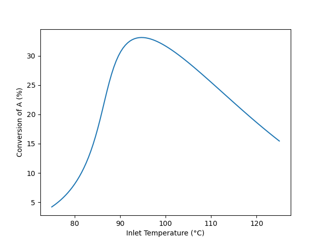
Qualitative Analysis
The results shown in Figure 12.5 are reasonable. For any feed temperature heat will be released by reaction leading to an outlet temperature that is greater than the inlet temperature. The rate expression, equation (2), contains two temperature dependent terms, namely the rate coefficient, \(k_1\), and the equilibrium constant, \(K_1\). The rate coefficient increases as the temperature increases, but the equilibrium constant decreases. Looking at the rate expression, the rate will increase as \(k_1\) increases. As \(K_1\) decreases with increasing temperature, the second term in parentheses increases. Because the second term is being subtracted from 1, the term in parentheses decreases. To summarize, as the temperature increases, \(k_1\) increases and this alone would cause the rate to increase. As the temperature increases \(K_1\) decreases, and this alone would cause the rate to decrease.
At lower feed temperatures, the reaction has not come close to equilibrium. As the temperature increases, the effect upon \(k_1\) predominates and the rate increases. Consequently, the conversion increases. At intermediate feed temperatures, the reaction begins to approach thermodynamic equilibrium. As the temperature increases both \(k_1\) and \(K_1\) affect the rate, and consequently the rate, and by extension, the conversion, rises less steeply. At some temperature, the effects of \(k_1\) and \(K_1\) on the rate become equal and the rate (and conversion) reaches a maximum. At still higher temperatures, the reaction becomes close to thermodynamic equilibrium. At this point, as the temperature increases, the effect of \(K_1\) predominates and the rate, while still positive, decreases with increasing temperature. Consequently, as the rate decreases, the conversion decreases.
12.7.4 Multiple Steady States in a CSTR
An adiabatic, steady-state CSTR with a volume of 500 cm3 is going to be used to convert A and B into Y and Z. A liquid- solution flowing at 1.0 cm3 s-1 and containing equal amounts of A and B (0.015 mol cm-3) at 50 °C will be used. The heat capacity of the fluid is essentially equal to that of the solvent, 0.35 cal g-1 K-1 and can be considered to be constant. The (constant) density of the fluid is 0.93 gm cm-3. The rate expression for reaction (1) is given in equation (2), and the heat of reaction (1) may be assumed to be constant and equal to -20 kJ mol-1. The pre-exponential factor is 3.24 x 1012 cm3 mol-1 s-1, and the activation energy is 105.0 kJ mol-1. At these conditions three different steady states are possible; determine the conversion and outlet temperature for each of them.
\[ A + B \rightarrow Y + Z \tag{1} \]
\[ r_1 = k_1C_AC_B \tag{2} \]
Click Here to See What an Expert Might be Thinking at this Point
This assignment entails analysis of an isolated, steady-state CSTR. To summarize the assignment I will assign appropriate variable symbols to each quantity given in the assignment narrative. I will use a subscripted “in” to denote quantities associated with the feed.
12.7.4.1 Assignment Summary
Given and Known Constants: \(V\) = 500 cm3, \(\dot{V}_{in}\) = 1.0 cm3 s-1, \(C_{A,in}\) = 0.015 mol cm-3, \(C_{B,in}\) = 0.015 mol cm-3, \(T_{in}\) = 50 °C, \(\tilde{C}_p\) = 0.35 cal g-1 K-1, \(\rho\) = 0.93 gm cm-3, \(\Delta H_1\) = –20 kJ mol-1, \(k_{0,1}\) = 3.24 x 1012 cm3 mol-1 s-1, \(E_1\) = 105.0 kJ mol-1, and \(R\) = 8.314 J mol-1 K-1.
Reactor System: Adiabatic, steady-state CSTR
Quantities of Interest: \(f_A\) and \(T\) for each of 3 steady states
12.7.4.2 Mathematical Formulation of the Solution
Click Here to See What an Expert Might be Thinking at this Point
In order to model the reactor, I need to generate the reactor design equations. I’ll start with mole balances on each reagent since mole balances are always needed. The general form of the steady-state CSTR mole balance is given in Equation 6.31. In this system, only A and B are present in the feed, so \(\dot{n}_{Y,in}\) and \(\dot{n}_{Z,in}\) are equal to zero. There is a single reaction, so the summation reduces to a single term.
\[ 0 = \dot n_{i,in} - \dot n_i + V \cancelto{\nu_{i,1}r_1}{\sum_j \nu_{i,j}r_j} \]
The reactor is not isothermal, so the mole balances cannot be solved independently. An energy balance on the reacting fluid is needed. Equation 6.32 gives the general form of the reacting fluid energy balance for a steady-state CSTR. The reactor is adiabatic and there are no shafts or moving boundaries that are performing work, so \(\dot{Q}\) and \(\dot{W}\) are equal to zero. The sum over the molar heat capacities can be replaced with the overall gravimetric heat capacity. It’s a constant and can be taken outside of the integrals, and the integral can be evaluated. There is only one reaction, so the final summation reduces to a single term.
\[ 0 = \cancelto{0}{\dot Q} - \cancelto{0}{\dot W} - \cancelto{\dot{V}_{in} \rho \tilde{C}_p \left(T - T_{in}\right)}{\sum_i\dot n_{i,in} \int_{T_{in}}^T \hat C_{p,i}dT} - V\cancelto{r_1 \Delta H_1}{\sum_j r_j \Delta H_j} \]
There isn’t a heat exchange fluid, so an exchange fluid energy balance is not needed.
Reactor Design Equations
Mole balance design equations for A, B, Y, and Z are presented as residual expressions in equations (3) - (6). The energy balance on the reacting fluid is given in equation (7).
\[ 0 = \dot n_{A,in} - \dot n_A - Vr_1 = \epsilon_1 \tag{3} \]
\[ 0 = \dot n_{B,in} - \dot n_B - Vr_1 = \epsilon_2 \tag{4} \]
\[ 0 = - \dot n_Y + Vr_1 = \epsilon_3 \tag{5} \]
\[ 0 = - \dot n_Z + Vr_1 = \epsilon_4 \tag{6} \]
\[ 0 = -\dot{V}_{in} \rho \tilde{C}_p \left( T - T_{in}\right) - Vr_1 \Delta H_1 = \epsilon_5 \tag{7} \]
Click Here to See What an Expert Might be Thinking at this Point
I will solve the reactor design equations for \(\dot{n}_A\), \(\dot{n}_B\), \(\dot{n}_Y\), \(\dot{n}_Z\), and \(T\). They are ATEs, so in order to solve them numerically I’ll need to do two things: calculate the values of the residuals for each guess and provide an initial guess.
I’ll need to evaluate the residuals each time a new guess for the solution is generated. At that point, values for \(\dot{n}_A\), \(\dot{n}_B\), \(\dot{n}_Y\), \(\dot{n}_Z\), and \(T\) will be available along with the given and known constants. I will need to calculate any other quantities that appear in the residuals expressions.
Examination of equations (3) through (7) shows that for this system I’ll need to calculate the inlet molar flow rates and the reaction rate. The inlet volumetric flow rate and the inlet concentrations are given, so I can calculate the inlet molar flow rates using the defining equation for concentration in a open system.
\[ C_{i,in} = \frac{\dot{n}_{i,in}}{\dot{V}_{in}} \qquad \Rightarrow \qquad \dot{n}_{i,in} = \dot{V}_{in}C_{i,in} \]
The rate can be calculated using equation (2). In order to use that equation I’ll first need to calculate the rate coefficient and the outlet concentrations of A and B. The rate coefficient can be calculated using the outlet temperature in the Arrhenius expression, Equation 4.8. The outlet concentrations can be calculated using the defining equation for concentration in an open system. Here the fluid may be assumed to be an incompressible liquid, so the inlet and outlet volumetric flow rates are equal.
\[ C_i = \frac{\dot{n}_i}{\dot{V}} = \frac{\dot{n}_i}{\dot{V}_{in}} \]
Ancillary Equations for Evaluating the Residuals
\[ \dot{n}_{A,in} = \dot{V}_{in} C_{A,in} \tag{8} \]
\[ \dot{n}_{B,in} = \dot{V}_{in} C_{B,in} \tag{9} \]
\[ k_1 = k_{0,1} \exp{\left( \frac{-E_!}{RT} \right)} \tag{10} \]
\[ C_A = \frac{\dot n_A}{\dot{V}_{in}} \tag{11} \]
\[ C_B = \frac{\dot n_B}{\dot{V}_{in}} \tag{12} \]
Click Here to See What an Expert Might be Thinking at this Point
When I solve the ATEs numerically, I’ll also need to provide an initial guess for the solution. In this assignment, I need to find three different solutions of the design equations. For reasons I won’t go into here (but related to the fact that the middle steady state is unstable), I expect the middle steady state to be the most difficult to find.
I expect the molar flow rates of A and B to decrease, the molar flow rates of Y and Z to increase, and the temperature to increase (exothermic reaction in an adiabatic reactor). As a first guess, I’ll use small values for the changes. Once I’ve converged to the low temperature steady state, I’ll increase the temperature guess by 100 °C and also increase the guesses for the changes in the molar flow rates. I may need to revise the guesses, but eventually I should be able to get the ATE solver to converge to the high temperature steady state.
To find the middle temperature steady state, I’ll start by using the average of the high and low temperature steady states. If the solver does not converge to the middle steady state, I’ll vary the temperature guess a small amount until I find the middle steady state.
For each of the steady states, I can calculate the conversion using its definition.
Ancillary Equations for Calculating the Quantities of Interest
Solving the reactor design equations yields \(\dot{n}_A\), \(\dot{n}_B\), \(\dot{n}_Y\), \(\dot{n}_Z\), and \(T\) for each of the three steady states. The corresponding conversion for each steady state can be calculated using equation (13).
\[ f_A = \frac{\dot{n}_{A,in} - \dot n_A}{\dot{n}_{A,in}} \tag{13} \]
Calculations Summary
- Substitute given and known constants into all equations.
- When it is necessary to evaluate the residuals
- \(\dot{n}_A\), \(\dot{n}_B\), \(\dot{n}_Y\), \(\dot{n}_Z\), and \(T\). will be available.
- calculate \(\dot{n}_{A,in}\), \(\dot{n}_{B,in}\), \(k_1\), \(C_A\), and \(C_B\) using equations (8) through (12)
- calculate the rate using equation (2).
- evaluate the residuals using equations (3) through (7).
- When it is necessary to calculate the quantities of interest, [list]
- \(\dot{n}_A\), \(\dot{n}_B\), \(\dot{n}_Y\), \(\dot{n}_Z\), and \(T\) will be available.
- calculate \(f_A\) using equation (13).
12.7.4.3 Numerical implementation of the Solution
- Make the given and known constants available for use in all functions.
- Write a residuals function that
- receives guess values for \(\dot{n}_A\), \(\dot{n}_B\), \(\dot{n}_Y\), \(\dot{n}_Z\), and \(T\),
- evaluates the residuals as described in step 2 of the calculations summary, and
- returns the values of the residuals.
- Write a reactor model function that
- receives an initial guess for the unknowns, \(\dot{n}_A\), \(\dot{n}_B\), \(\dot{n}_Y\), \(\dot{n}_Z\), and \(T\),
- solves the design equations by calling an ATE solver and passing the following information to it
- the initial guess and
- the name of the residuals function from step 2 above,
- checks that the solver converged, and
- returns the values returned by the ATE solver.
- Perform the analysis by
- setting an initial guess for the low temperature steady state
- getting \(\dot{n}_A\), \(\dot{n}_B\), \(\dot{n}_Y\), \(\dot{n}_Z\), and \(T\) by calling the reactor model function from step 3 above,
- calculating the conversion as described in step 3 of the calculations summary,
- repeating steps 4a through 4c using a guess for the high temperature steady state,
- repeating steps 4a through 4c using a guess for the middle temperature steady state, and
- reporting the results.
12.7.4.4 Results and Discussion
The calculations were performed as described above. The steady-state outlet temperatures and conversions are presented in Table 12.1. The steady states at 50.1 and 265 °C are expected to be stable while the steady state at 138 °C is expected to be unstable.
Note
This assignment states that three steady states are possible. In most cases, however, an engineer won’t know whether or not multiple steady states are possible. It is critically important to know when multiple steady states exist so that the desired steady state can be identified and appropriate start-up procedures can be developed to reach it.
One way to determine whether multiple steady states are possible is to plot the outlet temperature as a function of the inlet temperature. The “trick” that makes this easier to do is to choose a range of outlet temperatures and then solve the reactor design equations to find the outlet molar flow rates and the inlet temperature corresponding to each outlet temperature. As noted in Section 12.5, for each outlet temperature there is only one inlet temperature.
The reactor model was used to calculate the steady-state outlet temperature and the steady-state conversion as functions of the feed temperature for this reactor. The results are presented in Figure 12.6 and Figure 12.7. In both cases the curves exhibit the “S” shape described in Section 12.5. The dashed sections of the (black) curves are unstable steady states (see Section 12.6.1). The ignition point occurs at an inlet temperature of 90.5 °C and is shown as a solid red line. The extinction point occurs at an inlet temperature of 3.9 °C and is indicated by a dashed red line.
The outlet temperature corresponding to the ignition point is 103 °C, and the outlet temperature corresponding to the extinction point is 188 °C. The reactor should not be operated at temperatures close to these points because it would be highly sensitive to small changes in any of the reactor operating parameters.
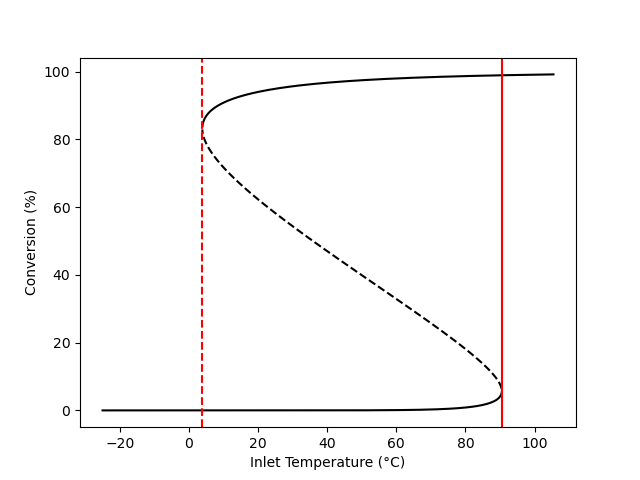
12.7.5 Start-Up of a CSTR
A 10 gal CSTR with a 1.25 gal shell is going to be used for the conversion of A and B according to reactions (1), (2), and (3). Both the reactor and the shell are perfectly mixed. Before flow into the reactor begins, it is filled with a solution containing only B at a concentration of 3 mol gal-1 and a temperature of 20 °C, while the shell is filled with cooling water at 20 °C. To start up the reactor, 0.5 gal min-1 of a feed consisting of a liquid solution of A (7.5 mol gal-1) and B (3 mol gal-1) at 50 °C starts flowing into the reactor and simultaneously cooling water at 20 °C starts flowing into the shell at a rate of 250 g min-1. The heat transfer coefficient between the reactor and the shell is 190 cal ft-2 min-1 K-1 and the heat transfer area is 4 ft2. The entire process operates at a constant pressure of 1 atm.
Each of the reactions is first order in the concentration of A and first order in the concentration of B. The pre-exponential factors, activation energies and heats of reaction are listed in the table below. The heats of reaction may be taken to be constant. The cooling water has a constant density of 1 g cm-3 and a constant heat capacity of 1 cal g-1 K-1. The reacting fluid may be assumed to have a constant heat capacity of 1600 cal gal-1 K-1.
Plot the temperature of the reacting fluid, the temperature of the cooling water in the jacket, and the concentration of B in the reactor during the first 30 minutes of the start-up process.
| Reaction | k0 (gal mol-1 min-1) | E (kcal mol-1) | \(\Delta H\) (kcal mol-1) |
|---|---|---|---|
| 1 | 4.3 x 108 | 14.2 | -11.0 |
| 2 | 2.7 x 108 | 16.1 | -11.6 |
| 3 | 3.9 x 108 | 14.8 | -12.1 |
\[ A + B \rightarrow W + Z \tag{1} \]
\[ A + B \rightarrow X + Z \tag{2} \]
\[ A + B \rightarrow Y + Z \tag{3} \]
Click Here to See What an Expert Might be Thinking at this Point
This assignment involves the start-up of a cooled CSTR. Start-up is always a transient process. To summarize this assignment, I will assign an appropriate variable symbol to each quantity mentioned in the assignment. Transient CSTR involve changes in molar flow rates that occur both spatically and temporily (over time). I’ll use a subscripted “in” to denote quantities associates with the feed into the reactor and I’ll use a subscripted “0” to denote the initial values of quantities.
12.7.5.1 Assignment Summary
Given and Known Constants: \(V\) = 10 gal, \(V_{ex}\) = 1.25 gal, \(C_{B,0}\) = 3 mol gal-1, \(T_0\) = (20 + 273.15) K, \(\dot V_{in}\) = 0.5 gal min-1, \(C_{A,in}\) = 7.5 mol gal-1, \(C_{B,in}\) = 3 mol gal-1, \(T_{in}\) = (50 + 273.15) K, \(T_{ex,0}\) = \(T_{ex,in}\) = = (20 + 273.15) K, \(\dot m_{ex,in}\) = 250 g min-1, \(U\) = 190 cal ft-2 min-1 K-1, \(A\) = 4 ft2, \(P\) = 1 atm, \(\rho_{ex}\) = 1 g cm-3, \(\tilde C_{p,ex}\) = 1 cal g-1 K-1, \(\breve C_p\) = 1600 cal gal-1 K-1, \(k_{0,j}\) in Table 1, \(E_j\) in Table 1, \(\Delta H_j\) in Table 1, \(t_f\) = 30 min, and \(R\) = 1.987 cal mol-1 K-1.
Reactor System: Transient, cooled CSTR
Quantities of Interest: \(T\left(t\right)\), \(T_{ex}\left(t\right)\), and \(C_B\left(t\right)\) as graphs.
12.7.5.2 Mathematical Formulation of the Solution
Click Here to See What an Expert Might be Thinking at this Point
I need to generate the reactor design equation needed to model this reaction. I’ll start by writing a mole balance on each reagent, A, B, W, X, Y, and Z. The general form of the transient CSTR mole balance is given in Equation 6.24. This reactor is full at the start of the transient, and a steady flow of liquid into the reactor is maintained throughout. Assuming the liquid to be an incompressible, ideal solution, this means that the reacting fluid volume and the outlet volumetric flow rate are both constant. Because they are constant, their time derivatives are equal to zero. Only A and B flow into the reactor so \(\dot{n}_{W,in}\), \(\dot{n}_{X,in}\), \(\dot{n}_{Y,in}\), and \(\dot{n}_{Z,in}\) are equal to zero. There are three reactions taking place, so the summation expands to three terms.
\[ \frac{V}{\dot V}\frac{d \dot n_i}{dt} + \frac{\dot n_i}{\dot V}\cancelto{0}{\frac{dV}{dt}} - \frac{\dot n_iV}{\dot V^2}\cancelto{0}{\frac{d \dot V}{dt}} = \dot n_{i,in} - \dot n_i + V \cancelto{\nu_{i,1}r_1 + \nu_{i,2}r_2 + \nu_{i,3}r_3}{\sum_j \nu_{i,j}r_j} \]
When these IVODEs are solved numerically, it will be necessary to evaluate the derivatives at the start of each integration step. That will be straightforward if they are written in the form of derivative expressions (see Section F.5.2), so I’ll multiply both sides of the equations by the volumetric flow rate and divide both sides by the reacting fluid volume.
\[ \frac{d \dot n_i}{dt} = \frac{\dot{V}}{V} \left(\dot n_{i,in} - \dot n_i + V\left(\nu_{i,1}r_1 + \nu_{i,2}r_2 + \nu_{i,3}r_3\right)\right) \]
The reactor is not isothermal, so the mole balances cannot be solved independently, and an energy balance on the reacting fluid must be added to the design equations. The general form of the transient energy balance on the reacting fluid in a CSTR is given in Equation 6.25. As previously noted, the time derivative of the reacting fluid volume is zero. The pressure is also constant, so its time-derivative is also zero. There are no shafts or moving boundaries that do work, so \(\dot{W}\) is also equal to zero.
\[ \begin{split} \frac{V}{\dot V}\sum_i \left( \dot n_i \hat C_{p,i} \right) &\frac{dT}{dt} - V \cancelto{0}{\frac{dP}{dt}} - P\cancelto{0}{\frac{dV}{dt}} = \dot Q - \cancelto{0}{\dot W} \\&- \sum_i\dot n_{i,in} \int_{T_{in}}^T \hat C_{p,i}dT - V\sum_j r_j \Delta H_j \end{split} \]
The volumetric heat capacity of the reacting fluid as a whole is given, so it can be used in place of the molar heat capacities. The volumetric heat capacity is a constant, so it can be brought outside of the integral and the integral can be evaluated. Also, the final summation can be expanded to three terms, one for each of the three reactions.
\[ \frac{V}{\dot V}\cancelto{\dot{V}\breve{C}_p}{\sum_i \left( \dot n_i \hat C_{p,i} \right)} \frac{dT}{dt} = \dot Q - \cancelto{\dot{V}\breve{C}_p\left(T - T_{in}\right)}{\sum_i\dot n_{i,in} \int_{T_{in}}^T \hat C_{p,i}dT} - V\cancelto{r_1 \Delta H_1 + r_2 \Delta H_2 + r_3 \Delta H_3}{\sum_j r_j \Delta H_j} \]
Again, evaluation of the derivative will be facilitated if the energy balance is written as a derivative expression.
\[ \frac{dT}{dt} = \frac{\dot{Q} - \dot V_{in} \breve C_p \left(T - T_{in}\right) - V \left( r_1\Delta H_1 + r_2\Delta H_2 + r_3\Delta H_3 \right)}{V \breve C_p } \]
Finally, this reactor is cooled using chilled water. The inlet temperature of the water is known, but not the temperature within the jacket. Therefore, an energy balance on the heat exchange fluid must also be included in the reactor design equations. In this system, the cooling water only exchanges sensible heat, so the general form of the exchange fluid energy balance is given by Equation 6.2. The exchange fluid heat capacity is constant, so it can be taken outside of the integral, and the integral can be evaluated. Dividing both sides of this equation by \(\rho_{ex} V_{ex} \tilde C_{p,ex}\) will put it in the form of a derivative expression.
\[ \rho_{ex} V_{ex} \tilde C_{p,ex}\frac{dT_{ex}}{dt} = -\dot Q - \dot m_{ex} \int_{T_{ex,in}}^{T_{ex}} \tilde C_{p,ex}dT \]
Reactor Design Equations
Mole balance design equations for A, B, W, X, Y, and Z are presented in equations (4) through (9). The energy balance on the reacting fluid is given in equation (10). An energy balance on the heat exchange fluid is shown in equation (11).
\[ \frac{d\dot n_A}{dt} = \frac{\dot V}{V}\left(\dot n_{A,in} - \dot n_A - V\left(r_1 + r_2 + r_3\right)\right) \tag{4} \]
\[ \frac{d\dot n_B}{dt} = \frac{\dot V}{V}\left(\dot n_{B,in} - \dot n_B - V\left(r_1 + r_2 + r_3\right)\right) \tag{5} \]
\[ \frac{d\dot n_W}{dt} = \frac{\dot V}{V}\left(- \dot n_W + Vr_1\right) \tag{6} \]
\[ \frac{d\dot n_Z}{dt} = \frac{\dot V}{V}\left(- \dot n_Z + V\left(r_1 + r_2 + r_3\right)\right) \tag{7} \]
\[ \frac{d\dot n_X}{dt} = \frac{\dot V}{V}\left(- \dot n_X + Vr_2\right) \tag{8} \]
\[ \frac{d\dot n_Y}{dt} = \frac{\dot V}{V}\left(- \dot n_Y + Vr_3\right) \tag{9} \]
\[ \frac{dT}{dt} = \frac{\dot{Q} - \dot V_{in} \breve C_p \left(T - T_{in}\right) - V \left( r_1\Delta H_1 + r_2\Delta H_2 + r_3\Delta H_3 \right)}{V \breve C_p } \tag{10} \]
\[ \frac{dT_{ex}}{dt} = \frac{-\dot Q - \dot m_{ex} \tilde C_{p,ex} \left( T_{ex} - T_{ex,in} \right)}{\rho_{ex} V_{ex }\tilde C_{p,ex}} \tag{11} \]
Click Here to See What an Expert Might be Thinking at this Point
There are eight IVODEs and they contain eight dependent variables, so there is no need to add an IVODE or eliminate a dependent variable. I can define \(t=0\) to be the instant that the flows start. The initial values are then equal to the outlet molar flow rates and temperatures at that instant. Initially the reactor contains only B, so when the flow starts that is the only reagent flowing out of the reactor. Since there is no A, W, X, Y, or Z in the reactor at that instant, their initial outlet flow rates are zero. I will let \(t_f\) represent the final time, in this case, 30 min.
Initial Values and Stopping Criterion
| Variable | Initial Value | Stopping Criterion |
|---|---|---|
| \(t\) | \(0\) | \(t_f\) |
| \(\dot{n}_A\) | \(0\) | |
| \(\dot{n}_B\) | \(\dot{n}_{B,0}\) | |
| \(\dot{n}_W\) | \(0\) | |
| \(\dot{n}_X\) | \(0\) | |
| \(\dot{n}_Y\) | \(0\) | |
| \(\dot{n}_Z\) | \(0\) | |
| \(T\) | \(T_0\) | |
| \(T_{ex}\) | \(T_{ex,0}\) |
Click Here to See What an Expert Might be Thinking at this Point
In order to solve the IVODEs numerically I’ll need to do two things: calculate the values of the derivatives at the start of each integration step and calculate all of the initial and final values in Table 12.2.
I’ll need to evaluate the derivatives at the start of each integration step. At that point, the independent and dependent variables (\(t\), \(\dot{n}_A\), \(\dot{n}_B\), \(\dot{n}_W\), \(\dot{n}_X\), \(\dot{n}_Y\), \(\dot{n}_Z\), \(T\), and \(T_{ex}\)) will be known along with the given and known constants. I will need to calculate any other quantities that appear in the derivatives expressions. Looking at the IVODEs I can see that I’ll need to calculate \(\dot{V}\), \(\dot{n}_{A,in}\), \(\dot{n}_{B,in}\), \(r_1\), \(r_2\), \(r_3\), and \(\dot{Q}\).
The reacting fluid is a liquid. Assuming it to be an incompressible, ideal solutions means that the inlet and outlet volumetric flow rates will be equal.
\[ \dot{V} = \dot{V}_{in} \]
The inlet volumetric flow rate and concentrations of A and B are given, so the inlet molar flow rates of A and B can be calculated using the defining equation for concentration.
\[ C_{i,in} = \frac{\dot{n}_{i,in}}{\dot{V}_{in}} \qquad \Rightarrow \qquad \dot{n}_{i,in} = C_{i,in}\dot{V}_{in} \]
The assignment states that each of the reactions is first order in A and first order in B. Assuming Arrhenius temperature dependence for the rate coefficient the rate expressions can be written.
\[ r_j = k_{0,j} \exp{ \left( \frac{-E_j}{RT} \right)} C_A C_B \]
In order to calculate the rate, I’ll need to calculate the outlet concentrations of A and B. That can be done using the defining equation for concentration.
\[ C_i = \frac{\dot{n}_i}{\dot{V}} \]
The rate of heat exchange can be calculated using the given heat transfer coefficient and heat transfer area.
Ancillary Equations for Evaluating the Derivatives
\[ \dot V = \dot V_{in} \tag{12} \]
\[ \dot n_{A,in} = \dot V_{in}C_{A,in} \tag{13} \]
\[ \dot n_{B,in} = \dot V_{in}C_{B,in} \tag{14} \]
\[ r_1 = k_{0,1}\exp{\left(\frac{-E_1}{RT}\right)}C_AC_B \tag{15} \]
\[ r_2 = k_{0,2}\exp{\left(\frac{-E_2}{RT}\right)}C_AC_B \tag{16} \]
\[ r_3 = k_{0,3}\exp{\left(\frac{-E_3}{RT}\right)}C_AC_B \tag{17} \]
\[ C_A = \frac{\dot n_A}{\dot V} \tag{18} \]
\[ C_B = \frac{\dot n_B}{\dot V} \tag{19} \]
\[ \dot Q = -\dot Q_e = UA\left(T_e - T\right) \tag{20} \]
Click Here to See What an Expert Might be Thinking at this Point
When I solve the IVODEs numerically, I’ll also need to calculate the initial and final values in Table 12.2. The initial temperature and the final time are given in the assignment. The initial outlet molar flow rate of B can be calculated from the volumetric flow rate and initial concentration in the reactor.
Ancillary Equation for Calculating the Initial and Final Values
\[ \dot{n}_{B,0} = \dot V C_{B,0} \tag{21} \]
Ancillary Equation for Calculating the Quantities of Interest
Solving the reactor design equations will yield sets of corresponding values of \(t\), \(\dot{n}_A\), \(\dot{n}_B\), \(\dot{n}_W\), \(\dot{n}_X\), \(\dot{n}_Y\), \(\dot{n}_Z\), \(T\), and \(T_{ex}\) spanning the range from their initial values to their final values. The corresponding outlet concentration of B can be calculated using equation (19).
Calculations Summary
- Substitute given and known constants into all equations.
- When it is necessary to evaluate the derivatives
- \(t\), \(\dot{n}_A\), \(\dot{n}_B\), \(\dot{n}_W\), \(\dot{n}_X\), \(\dot{n}_Y\), \(\dot{n}_Z\), \(T\), and \(T_{ex}\) will be available.
- calculate \(\dot{V}\), \(\dot{n}_{A,in}\), \(\dot{n}_{B,in}\), \(C_A\), \(C_B\), and \(\dot{Q}\) using equations (12) - (14) and (18) - (20).
- calculate \(r_1\), \(r_2\), and \(r_3\) using equations (15) - (17).
- evaluate the derivatives using equations (4) - (11).
- When it is necessary to calculate the initial and final values in Table 12.2
- \(T_0\) \(T_{ex,0}\), and \(t_f\) are known constants.
- calculate \(\dot{n}_{B,0}\) using equation (21).
- When it is necessary to calculate the quantities of interest, \(T\left(t\right)\), \(T_{ex}\left(t\right)\), and \(C_B\left(t\right)\)
- corresponding sets of values of \(t\), \(\dot{n}_A\), \(\dot{n}_B\), \(\dot{n}_W\), \(\dot{n}_X\), \(\dot{n}_Y\), \(\dot{n}_Z\), \(T\), and \(T_{ex}\), spanning the range from their initial values to their final values will be available.
- calculate corresponding values of \(C_B\) using equation (19).
12.7.5.3 Numerical implementation of the Solution
- Make the given and known constants available for use in all functions.
- Write a derivatives function that
- receives the independent and dependent variables, \(t\), \(\dot{n}_A\), \(\dot{n}_B\), \(\dot{n}_W\), \(\dot{n}_X\), \(\dot{n}_Y\), \(\dot{n}_Z\), \(T\), and \(T_{ex}\), as arguments,
- evaluates the derivatives as described in step 2 of the calculations summary, and
- returns the values of the derivatives.
- Write a reactor model function that
- calculates the initial and final values in Table 12.2 as described in step 3 of the calculations summary,
- gets corresponding sets of values of \(t\), \(\dot{n}_A\), \(\dot{n}_B\), \(\dot{n}_W\), \(\dot{n}_X\), \(\dot{n}_Y\), \(\dot{n}_Z\), \(T\), and \(T_{ex}\), spanning the range from their initial values to their final values by calling an IVODE solver and passing the following information to it
- the initial values and stopping criterion in Table 12.2 and
- the name of the derivatives function from step 2 above,
- checks that the solver successfully solved the IVODEs, and
- returns the values returned by the IVODE solver.
- Perform the analysis by
- getting corresponding sets of values of \(t\), \(\dot{n}_A\), \(\dot{n}_B\), \(\dot{n}_W\), \(\dot{n}_X\), \(\dot{n}_Y\), \(\dot{n}_Z\), \(T\), and \(T_{ex}\), spanning the range from their initial values to their final values by calling the reactor model function from step 3 above,
- calculating \(C_B\) as described in the calculations summary, and
- plotting \(T\left(t\right)\), \(T_{ex}\left(t\right)\), and \(C_B\left(t\right)\)
12.7.5.4 Results and Discussion
The calculations were performed as described above. The reacting fluid temperature, exchange fluid temperature and concentration of B during the first 30 min of startup are shown in Figures 12.8, 12.9, and 12.10. All three quantities appear to be approaching steady-state values.
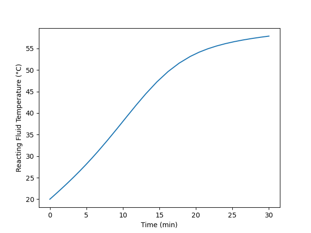
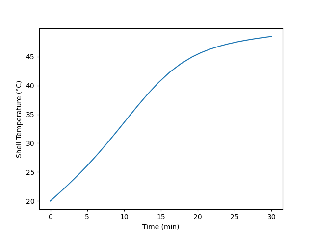
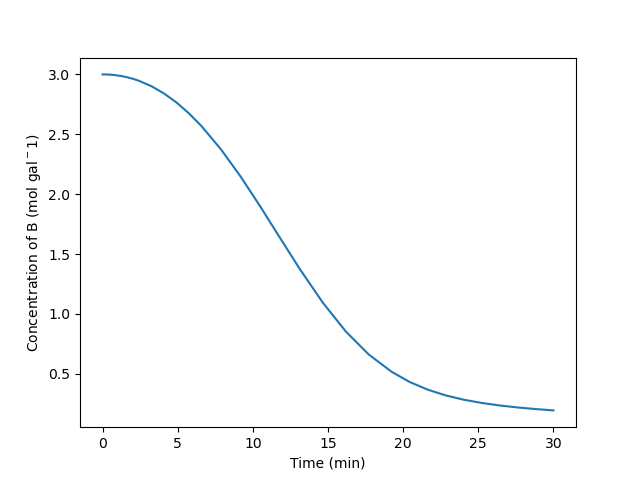
There are many ways to start-up a reactor. Here the reactor was filled with one reactant and the feed flow was initiated. Another option would be to charge the reactor with the feed and let it react in BSTR mode until the composition and temperature are near their steady-state values, and then start the flow. The start-up procedure that is ultimately used will likely be chosen, at least in part, on the basis of economics. For example, in this assignment the reactor operated for 30 minutes and still hadn’t quite reached steady-state. During that time it was not producing the intended product. If there is no use for that partially reacted product, of if the reactants are relatively expensive, the alternative method described above might be preferred because it wastes less feed and generates less partially reacted product.
12.7.6 Perturbations from an Unstable Steady State and Near Ignition and Extinction Points
Example 12.7.4 showed conditions where three steady states are possible when reaction (1) takes place in an adiabatic CSTR. Specifically, the reactor volume is 500 cm3 and the feed is 1.0 cm3 s-1 of a solution containing 0.015 mol cm-3 each of A and B at 50 °C. The heat capacity is 0.35 cal g-1 K-1, and the density is 0.93 gm cm-3. The heat of reaction is -20 kJ mol-1, and the rate is given by equation (2) with the pre-exponential factor equal to 3.24 x 1012 cm3 mol-1 s-1 and the activation energy equal to 105.0 kJ mol-1. The steady-state conversions were 0.03%, 39.9%, and 97.5%, and the corresponding outlet temperatures were 50, 183, and 265 °C.
\[ A + B \rightarrow Y + Z \tag{1} \]
\[ r_1 = k_1C_AC_B \tag{2} \]
The outlet temperature for this reactor was plotted as a function of the feed temperature in Figure 12.6. That graph is reproduced here as Figure 12.11, with three steady states highlighted as red dots labeled “u,” “ign,” and “ext.” Steady state u is the unstable steady state from Example 12.7.4. Steady state ign (\(T_{in}\) = 89 °C, \(f_A\) = 3.2%, and \(T\) = 96 °C) is just below the ignition point at \(T_{in}\) = 90.5 °C, and steady state ext (\(T_{in}\) = 6 °C, \(f_A\) = 88.1%, and \(T\) = 200 °C) is just above the extinction point at \(T_{in}\) = 3.9 °C
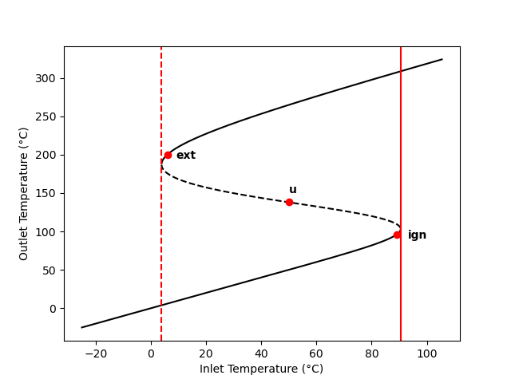
To show that steady state u is unstable, plot the outlet temperature vs. time if the temperature of a CSTR at steady state u is perturbed from 138 to 140 °C holding all of the inputs constant.
To show that there is an ignition point at \(T_{in}\) = 90.5 °C, plot the outlet temperature vs. time if the inlet temperature of a CSTR at steady state ign is increased from 89 to 91 °C and held there.
To show that there is an extinction point at \(T_{in}\) = 3.9 °C, plot the outlet temperature vs. time if the inlet temperature of a CSTR at steady state ext is increased from 6 to 3 °C and held there.
Click Here to See What an Expert Might be Thinking at this Point
This is an isolated reactor modeling problem involving an adiabatic CSTR. The assignment asks me to calculate how the temperature will change over time following a sudden change to a parameter, so the reactor is not at steady state, it is transient.
I’m asked to analyze 3 different scenarios: one involving perturbation from an unstable steady state, one involving perturbation from a steady state close to the ignition point, and one involving perturbation from a steady state close to the extinction point. For quantities that change from one scenario to the next I will use a subscripted \(u\) to denote the unstable steady state, \(ign\) to denote the steady state close to the ignition point, and \(ext\) to denote the steady state close to the extinction point.
I’ll use a subscripted \(in\) to denote reactor inlet values and a subscripted \(0\) to denote initial values. I’ll begin by summarizing the assignment using appropriate variable symbols for all quantities.
12.7.6.1 Assignment Summary
Given and Known Constants: \(V\) = 500 cm3, \(\dot{V}_{in}\) = 1.0 cm3 s-1, \(C_{A,in}\) = 0.015 mol cm-3, \(C_{B,in}\) = 0.015 mol cm-3, \(T_{in,u}\) = 50 °C, \(T_{in,ign}\) = 91 °C, \(T_{in,ext}\) = 3 °C, \(T_{0,u}\) = 140 °C, \(T_{0,ign}\) = 96 °C, \(T_{0,ext}\) = 200 °C, \(f_{A,0,u}\) = 39.9%, \(f_{A,0,ign}\) = 3.2%, \(f_{A,0,ext}\) = 88.1%, \(\tilde{C}_p\) = 0.35 cal g-1 K-1, \(\rho\) = 0.93 gm cm-3, \(\Delta H_1\) = -20 kJ mol-1, \(k_{0,1}\) = 3.24 x 1012 cm3 mol-1 s-1, \(E_1\) = 105.0 kJ mol-1, and \(R\) = 8.314 J mol-1 K-1.
Reactor System: Transient, adiabatic CSTR
Quantities of Interest: \(T\left(t\right)\) following perturbations from three steady states, as graphs.
12.7.6.2 Mathematical Formulation of the Solution
Click Here to See What an Expert Might be Thinking at this Point
This analysis involves a transient, adiabatic CSTR. To model it I will need mole balances and an energy balance on the reacting fluid. The general form of the transient CSTR mole balance is given in Equation 6.24. In all three cases, the volumetric flow rate and the reacting fluid volume do not change, so their time derivatives are equal to zero. Only A and B flow into the reactor, so \(\dot{n}_{Y,in}\) and \(\dot{n}_{Z,in}\) will equal zero. There is one reaction, so the summation reduces to a single term.
\[ \frac{V}{\dot V}\frac{d \dot n_i}{dt} + \frac{\dot n_i}{\dot V}\cancelto{0}{\frac{dV}{dt}} - \frac{\dot n_iV}{\dot V^2}\cancelto{0}{\frac{d \dot V}{dt}} = \dot n_{i,in} - \dot n_i + V \cancelto{\nu_{i,1}r_1}{\sum_j \nu_{i,j}r_j} \]
The general form of the transient CSTR reacting fluid energy balance is presente d in Equation 6.25. As already noted, the reacting fluid volume is constant and its derivative is zero. The same is true of the pressure. Furthermore there is no heat exchange and negligible work.
\[ \begin{split} \frac{V}{\dot V}\sum_i \left( \dot n_i \hat C_{p,i} \right) &\frac{dT}{dt} - V \cancelto{0}{\frac{dP}{dt}} - P\cancelto{0}{\frac{dV}{dt}} = \cancelto{0}{\dot Q }- \cancelto{0}{\dot W} \\&- \sum_i\dot n_{i,in} \int_{T_{in}}^T \hat C_{p,i}dT - V\sum_j r_j \Delta H_j \end{split} \]
The sensible heats can be expressed in terms of the given gravimetric heat capacity. That heat capacity is constant. It can be taken outside of the integral, and the integral can be evaluated. The summation over the reactions reduces to a single term.
\[ \frac{V}{\dot V}\cancelto{\dot{V}\rho\tilde{C}_p}{\sum_i \left( \dot n_i \hat C_{p,i} \right)} \frac{dT}{dt} = - \cancelto{\tilde{C}_p \rho \dot{V}_{in}\left( T - T_{in}\right)}{\sum_i\dot n_{i,in} \int_{T_{in}}^T \hat C_{p,i}dT} - V\cancelto{r_1 \Delta H_1}{\sum_j r_j \Delta H_j} \]
The mole balances can be written as derivative expression by multiplying both sides of the equations by \(\dot{V}\) and dividing by \(V\). The energy balance can be written as a derivative expression by dividing both sides by \(V\tilde{C}_p\rho\).
Reactor Design Equations
Mole balance design equations for A, B, Y, and Z are presented in equations (3) - (6). The energy balance on the reacting fluid is given in equation (7).
\[ \frac{d \dot{n}_A}{dt} = \frac{\dot{V}_{in}}{V}\left(\dot{n}_{A,in} - \dot{n}_A - V r_1\right) \tag{3} \]
\[ \frac{d \dot{n}_B}{dt} = \frac{\dot{V}_{in}}{V}\left(\dot{n}_{B,in} - \dot{n}_B - V r_1\right) \tag{4} \]
\[ \frac{d \dot{n}_Y}{dt} = \frac{\dot{V}_{in}}{V}\left( - \dot{n}_Y + V r_1\right) \tag{5} \]
\[ \frac{d \dot{n}_Z}{dt} = \frac{\dot{V}_{in}}{V}\left( - \dot{n}_Z + V r_1\right) \tag{6} \]
\[ \frac{dT}{dt} = \frac{ - \tilde{C}_p \rho \dot{V}_{in} \left( T - T_{in}\right) - V r_1 \Delta H_1}{V\tilde{C}_p \rho} \tag{7} \]
Click Here to See What an Expert Might be Thinking at this Point
The design equations consist of five IVODEs and they contain five dependent variables, so there isn’t any need to add an IVODE or eliminate a dependent variable.
Initial values and a stopping criterion will be needed when solving the IVODEs. I can define \(t=0\) to be the instant that the system was perturbed. The initial values are then the outlet molar flow rates of A, B, Y, and Z and the outlet temperature at that instant. These will be different for each of the three analyses. I can choose a final time that is large enough to show where the transient will end.
Initial Values and Stopping Criterion
| Variable | Initial Value | Stopping Criterion |
|---|---|---|
| \(t\) | \(0\) | \(t_f\) |
| \(\dot{n}_A\) | \(\dot{n}_{A,0,x}\) | |
| \(\dot{n}_B\) | \(\dot{n}_{B,0,x}\) | |
| \(\dot{n}_Y\) | \(\dot{n}_{Y,0,x}\) | |
| \(\dot{n}_Z\) | \(\dot{n}_{Z,0,x}\) | |
| \(T\) | \(T_{0,x}\) |
Click Here to See What an Expert Might be Thinking at this Point
In order to solve the IVODEs numerically I’ll need to do two things: calculate the values of the derivatives at the start of each integration step and calculate all of the initial and final values in Table 12.3.
I’ll need to evaluate the derivatives at the start of each integration step. At that point, the independent and dependent variables, \(t\), \(\dot{n}_A\), \(\dot{n}_B\), \(\dot{n}_Y\), \(\dot{n}_Z\), and \(T\), will be known along with the given and known constants. I will need to calculate any other quantities that appear in the derivatives expressions. Looking at equations (3) through (7), I see that I will need to calculate \(\dot{n}_{A,in}\), \(\dot{n}_{B,in}\), and \(r_1\).
The inlet volumetric flow rate and the feed concentrations of A and B are given, so the inlet molar flow rates can be calculated using the defining expression for concentration in an open system.
\[ C_i = \frac{\dot{n}_{i,in}}{\dot{V}_{in}} \qquad \Rightarrow \qquad \dot{n}_{i,in} = C_i \dot{V}_{in} \]
The rate can be calculated using equation (2), but to do so I’ll first need to calculate the rate coefficient using the outlet temperature in the Arrhenius expression, Equation 4.8. The outlet concentraions of A and B needed to calculate the rate can be calculated using the defining equation for concentration. Because the fluid is an ideal, incompressible liquid, the inlet and outlet volumetric flow rates will be equal.
\[ C_i = \frac{\dot{n}_i}{\dot{V}} = \frac{\dot{n}_i}{\dot{V}_{in}} \]
Ancillary Equations for Evaluating the Derivatives
\[ \dot{n}_{A,in} = \dot{V}_{in} C_{A,in} \tag{8} \]
\[ \dot{n}_{B,in} = \dot{V}_{in} C_{B,in} \tag{9} \]
\[ k_1 = k_{0,1} \exp{\left( \frac{-E_!}{RT} \right)} \tag{10} \]
\[ C_A = \frac{\dot n_A}{\dot{V}_{in}} \tag{11} \]
\[ C_B = \frac{\dot n_B}{\dot{V}_{in}} \tag{12} \]
Click Here to See What an Expert Might be Thinking at this Point
When I solve the IVODEs numerically, I’ll also need to calculate the initial and final values in Table 12.3. The initial outlet temperature for the three analyses are provided in the assignment narrative. The outlet molar flow rates of A, B, Y, and Z at the instant the system is perturbed will equal their steady-state values just prior to the perturbation. They can be calculated using the steady-state conversions provided in the assignment narrative.
Ancillary Equations for Calculating the Initial and Final Values
\[ \dot{n}_{A,0,x} = \dot{n}_{A,in} \left( 1 - f_{A,0,x} \right) \tag{13} \]
\[ \dot{n}_{B,0,x} = \dot{n}_{B,in} - f_{A,0,x} \dot{n}_{A,in} \tag{14} \]
\[ \dot{n}_{Y,0,x} = f_{A,0,x} \dot{n}_{A,in} \tag{15} \]
\[ \dot{n}_{Z,0,x} = f_{A,0,x} \dot{n}_{A,in} \tag{16} \]
Solving the reactor design equations will yield corresponding sets of values of \(t\), \(\dot{n}_A\), \(\dot{n}_B\), \(\dot{n}_Y\), \(\dot{n}_Z\), and \(T\), spanning the range from their initial values to their final values. No other quantities need to be calculated.
Calculations Summary
- Substitute given and known constants into all equations.
- When it is necessary to evaluate the derivatives
- \(t\), \(\dot{n}_A\), \(\dot{n}_B\), \(\dot{n}_Y\), \(\dot{n}_Z\), and \(T\) will be available.
- calculate \(\dot{n}_{A,in}\), \(\dot{n}_{B,in}\), \(k_1\), \(C_A\), and \(C_B\) using equations (8) through (12)
- calculate \(r_1\) using equation (2)
- evaluate the derivatives using equations (3) through (7).
- When it is necessary to calculate the initial and final values in Table 12.3
- \(t_f\) will be chosen and \(T_0\) will be known constants.
- calculate \(\dot{n}_{A,0}\), \(\dot{n}_{B,0}\), \(\dot{n}_{Y,0}\), and \(\dot{n}_{Z,0}\) using equations (13) - (16)
12.7.6.3 Numerical implementation of the Solution
- Make the given and known constants available for use in all functions.
- Write a derivatives function that
- receives the independent and dependent variables, \(t\), \(\dot{n}_A\), \(\dot{n}_B\), \(\dot{n}_Y\), \(\dot{n}_Z\), and \(T\), as arguments,
- evaluates the derivatives as described in step 2 of the calculations summary, and
- returns the values of the derivatives.
- Write a reactor model function that
- calculates the initial and final values in Table 12.3 as described in step 3 of the calculations summary,
- gets corresponding sets of values of \(t\), \(\dot{n}_A\), \(\dot{n}_B\), \(\dot{n}_Y\), \(\dot{n}_Z\), and \(T\), spanning the range from their initial values to their final values by calling an IVODE solver and passing the following information to it
- the initial values and stopping criterion in Table 12.3 and
- the name of the derivatives function from step 3 above, d, checks that the solver successfully solved the IVODEs, and
- returns the values returned by the IVODE solver.
- Perform each of the three analysss by
- choosing the final time, \(t_f\)
- getting corresponding sets of values of \(t\), \(\dot{n}_A\), \(\dot{n}_B\), \(\dot{n}_Y\), \(\dot{n}_Z\), and \(T\), spanning the range from their initial values to their final values by calling the reactor model function from step 5 above,
- plotting \(T\) vs \(t\)
- go back to step 4a and adjust \(t_f\) so that the graph shows the complete transient.
12.7.6.4 Results and Discussion
The calculations were performed as described above. Figure 12.12 shows the temperature as a function of time following perturbation from the unstable steady state at temperature of 138 °C to a temperature of 140 °C holding all of the inputs constant. Since none of the reactor inputs changed, the temperature would have returned to 138 °C had that been a stable steady state. Instead, the figure shows that the temperature increases to 265 °C, whereupon it becomes stable. Referring back to Example 12.7.4, 265 °C is the high temperature steady state for that reactor. This provides a rigorous confirmation of the argument made in Section 12.6.1 that the middle temperature steady state is unstable.
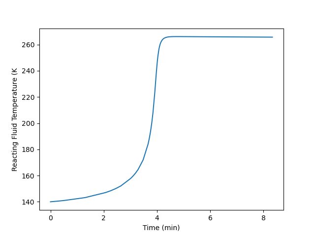
The ign steady state in Figure 12.11 is just below the ignition point. Figure 12.13 shows how the temperature changes over time following an increase of the feed temperature from 89 to 91 °C. Prior to the change the outlet temperature was 99 °C. The figure shows that increasing the feed temperature by 2 °C, causes the outlet temperature increase by 210 °C to 309 °C. For approximately 2 h, the outlet temperature increased slowly, but then it jumped almost instantly to the final temperature.
A rapid temperature rise like that shown in the figure is unsafe. In a real reactor, as opposed to the idealized model, the near vertical slope of the temperature vs. time curve might correspond to an explosion. In any case, this scenario must be avoided. To safely operate this reactor, the start-up procedure must bring the reactor to a high temperature steady state while keeping the feed temperature well below the ignition point of 90.5 °C.
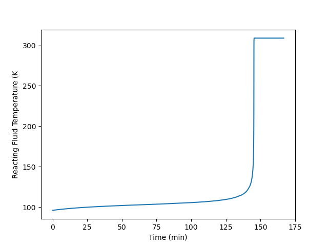
The ext steady state in Figure 12.11 is just above the extinction point. Figure 12.14 shows that if the feed temperature drops from 6 to 3 °C, the reactor temperature will drop from 200 to 3 °C. While this doesn’t pose a safety risk like ignition does, it essentially stops the reaction so that the process is no longer producing any Y and Z. Clearly this is not desirable, and to prevent if from happening, the reactor should not operate at a steady state close to the extinction point.
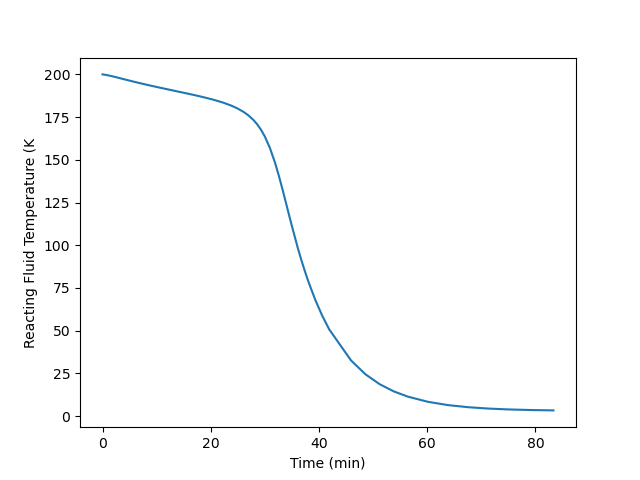
12.8 Symbols Used in Chapter 12
| Symbol | Meaning |
|---|---|
| \(i\) | Subscript denoting a fluid phase reagent. |
| \(j\) | Subscript denoting a reaction occurring in the system. |
| \(\dot m_{ex}\) | Mass flow rate of the exchange fluid. |
| \(\dot n_i\) | Molar flow rate of reagent \(i\); an additional subscripted “in” denotes the inlet value; an additional subscripted “out” denotes the outlet value. |
| \(r_j\) | Net rate of reaction \(j\) per unit volume of reacting fluid. |
| \(t\) | Time. |
| \(A\) | Heat transfer area. |
| \(C_i\) | Concentration of reagent \(i\); an additional subscripted “out” denotes the outlet value, “in” denotes the inlet value, or “0” denotes the initial value. |
| \(\tilde C_{p,ex}\) | Mass-specific heat capacity of the exchange fluid. |
| \(\tilde C_{p}\) | Mass-specific heat capacity of the reacting fluid. |
| \(\breve C_{p,ex}\) | Volume-specific heat capacity of the exchange fluid. |
| \(\breve C_{p}\) | Volume-specific heat capacity of the reacting fluid. |
| \(\hat C_{p,ex}\) | Molar heat capacity of the exchange fluid. |
| \(\hat C_{p,i}\) | Molar heat capacity of reagent \(i\). |
| \(M_{ex}\) | Molecular weight of the exchange fluid. |
| \(P\) | Pressure of the reacting fluid. |
| \(P_i\) | Partial pressure of reagent \(i\). |
| \(\dot Q\) | Rate of heat transfer from the exchange fluid to the reacting fluid. |
| \(\dot{Q}_{abs}\) | Heat consumed in heating the reactor feed to the reactor outlet temperature. |
| \(\dot{Q}_{gen}\) | Heat released by the occurence of the reaction or reactions. |
| \(R\) | Ideal gas constant. |
| \(T\) | Temperture of the reacting fluid; an additional subscripted “in” denotes the inlet value; an additional subscripted “0” denotes the initial value. |
| \(T_{ex}\) | Temperature of the exchange fluid within the shell/jacket and at the outlet; an additional subscripted “in” denoes the inlet value. |
| \(U\) | Heat transfer coefficient. |
| \(V\) | Volume of reacting fluid within a reactor. |
| \(\dot V\) | Volumetric flow rate of the reacting fluid; an additional subscripted “in” denotes the value at the inlet. |
| \(V_{ex}\) | Volume of exchange fluid contained within the reactor shell/jacket. |
| \(\dot W\) | Rate at which the reacting fluid does work on the surroundings via shafts, moving boundaries, etc. |
| \(\gamma\) | Fraction of the exchange fluid that undergoes phase change. |
| \(\epsilon\) | Residual that is equal to zero when evaluated using a solution to the corresponding ATE. |
| \(\nu_{i,j}\) | Stoichiometric coefficient of reagent \(i\) in reaction \(j\). |
| \(\rho\) | Density of the reacting fluid. |
| \(\rho_{ex}\) | Density of the exchange fluid. |
| \(\tau\) | Space time. |
| \(\Delta H_j\) | Heat of reaction \(j\). |
| \(\Delta H_{\text{latent},ex}^0\) | Latent heat for the phase change the exchange fluid undergoes. |